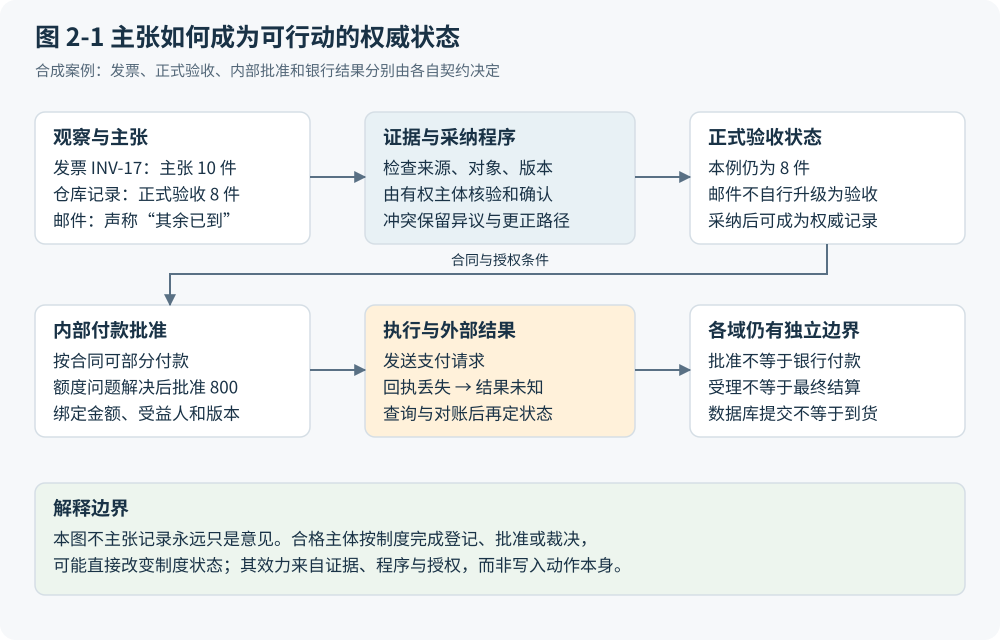
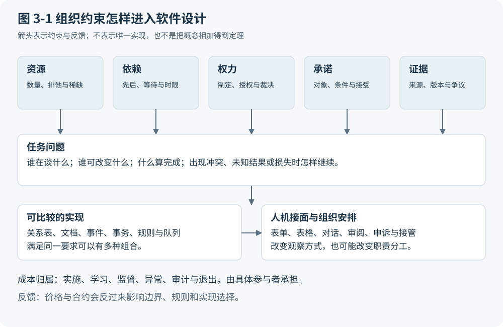
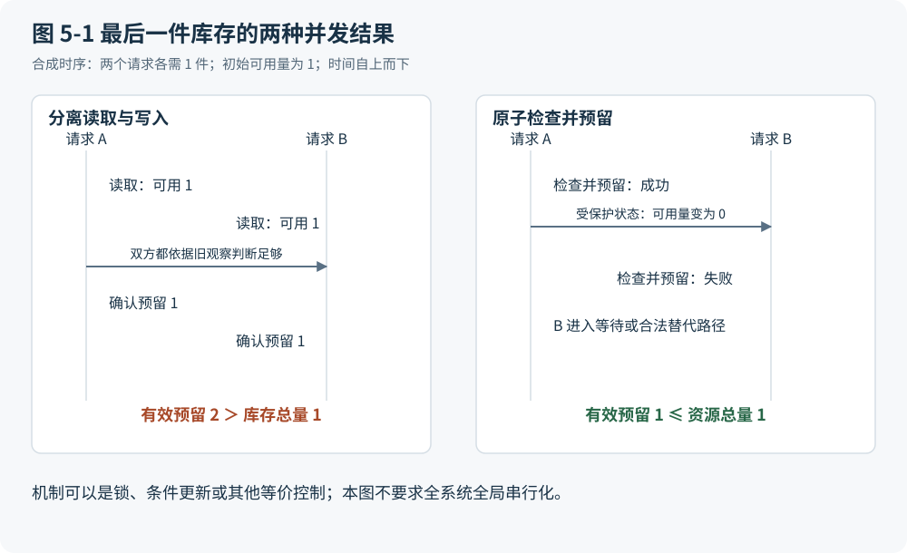
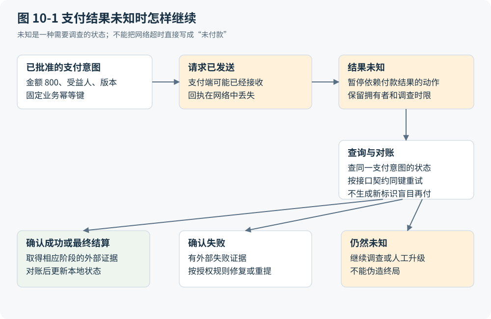
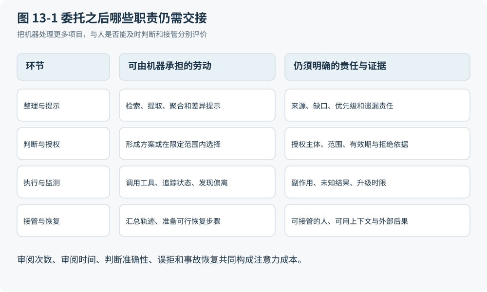
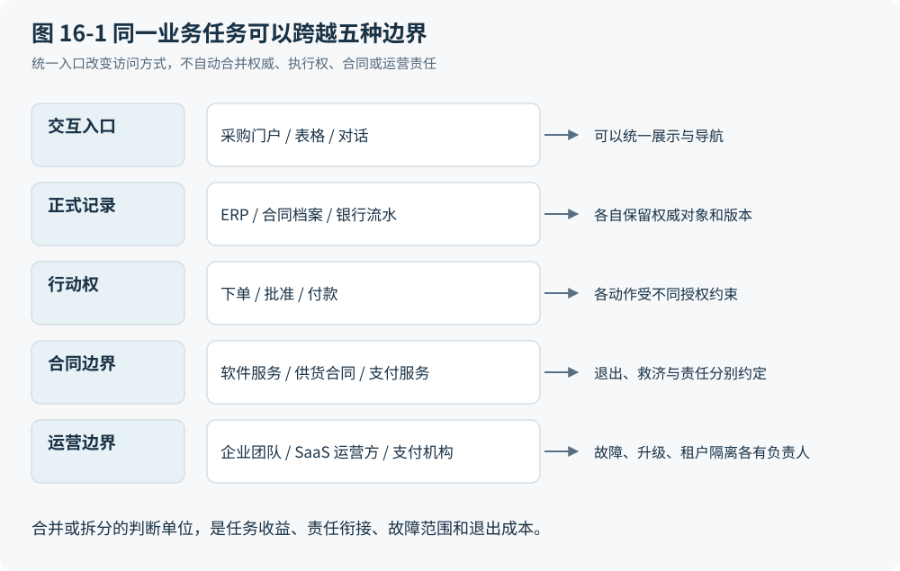
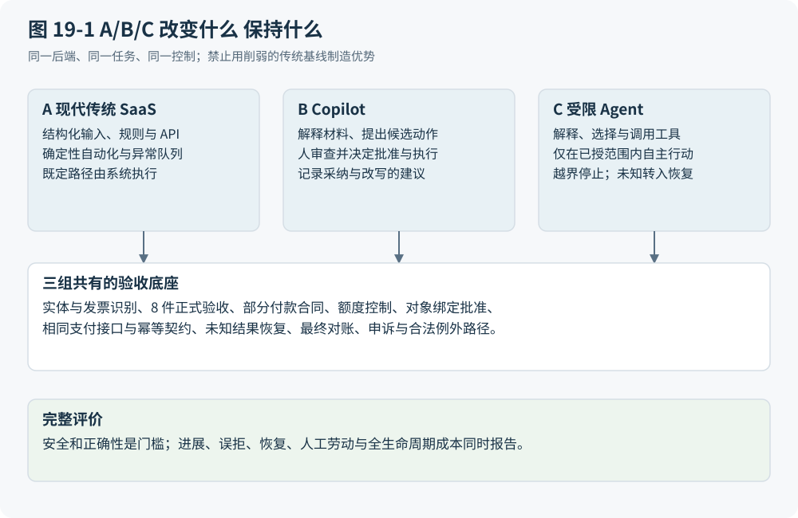
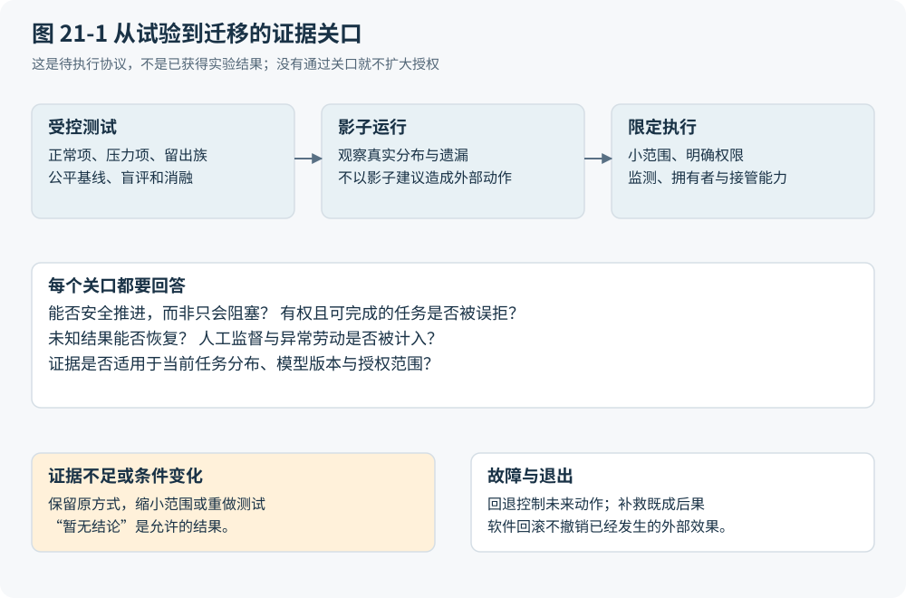

清算 SaaS
从组织约束到软件机制
再到 Agent 的逐项审计
正文初稿 v1 · 六部二十三章
2026 年 9 月 30 日
合成案例与实验协议均已明确标注。本稿没有运行 A/B/C 比较实验；结论保留条件与反证入口。
前言 为什么要逐项清算
企业软件常处在两种相反的叙述之间。一种说法把今天的产品结构视为复杂业务不可避免的结果，仿佛表单、审批、集成和实施天然就该如此。另一种说法从机器能够理解材料、规划步骤和调用工具出发，推断应用、界面和流程即将失去意义。这两种说法都跳过了同一个问题：一项工作为什么需要这些机制，移除它们以后，原来的约束由谁承担？
本书所谓“清算”，是逐项查账。它先说明一种设计解决了什么问题，以及旧条件下为何合理，再问新的能力改变了什么。重复抄写可能不再值得保留，但采购授权并不因为文字识别准确而自动出现。固定页面可能让位于按任务生成的视图，但并排比较和形成新问题仍可能需要视觉空间。记录、行动和人的注意力都可以重新组织，前提是我们能指出具体任务、必要结果和成本承接者。
这里必须先拆开四个常被混用的轴。“企业软件”说明用途；SaaS，即软件即服务，说明软件服务的交付与控制边界；传统自动化、辅助式 AI（Copilot）与受限代理（Agent），说明解释、选择和执行动作的方式；席位、调用量和结果，则是计费单位。Agent 可以作为 SaaS 提供，传统软件也能高度自动化。NIST 对 SaaS 的定义支持服务边界的区分，并未把某一种计费单位写成必要条件。R01
本书面向已经接触过软件开发、产品或企业运营的读者。我们从有边界的业务任务出发，暂用资源、依赖、权力、承诺与证据解释组织如何协调行动。这个工作模型不是被证明最小的原语集，更不是普适定理。它只有在能区分失败、指导取舍、产生可验证预测时才值得保留。四种候选视图的比较、工作负载反例和删除测试，都是为了让模型有机会失败。
贯穿案例是采购到付款。全部订单、发票、数量、金额和异常轨迹都是合成测试输入：采购订单 PO-42 订购 10 件，每件 100 单位货币；发票 INV-17 主张 10 件，正式验收为 8 件。我们假定合同允许部分付款，内部额度问题解决后可批准本期 800，剩余 200 待验收或争议处理。金额由验收与合同条件决定，内部预算额度、银行现金、采购承诺和应付义务分别记录。这些设定用来暴露机制，不代表真实客户，也不能估计现实异常的频率。
书的六部沿着解释依赖展开。第一部从协作进入主张与权力，再比较模型；第二部说明身份、事务、历史和分析表示；第三部处理流程、异常和跨边界执行；第四部解释输入、探索、注意力及授权；第五部追踪实施、产品边界与经济成本；第六部才讨论怎样用 Agent 重做，并规定公平比较、迁移和否证条件。顺序不是单向技术分层：界面会改变组织，合约会改变软件边界，证据要求也会反过来约束数据设计。
这是完整章节的第一轮正文初稿，不是完成实证验证的定稿。资料核查截至 2026 年 9 月 30 日。原始证据账本保留 70 项去重来源及其读取范围，其中 6 项只核读摘要或概览；其余也只声称核读相关正文段落，不声称通读所有长论文和标准。规范用来说明定义，工程文档用来说明机制，实验才能支持效果判断。本书没有运行 A/B/C 比较实验，没有测得 Agent 的成本、可靠性或替代率。
因此，第六部的公式、测试和空结果表是研究协议。库存并发、复杂案件、探索分析与连续控制已经参与模型开发，不能再次充当未见样本。未来的独立案例与实验可能要求改写章节，甚至放弃暂定模型。正文的目标是让这些改写有明确依据，而非以尚不存在的结果为一个流行判断作证。
文字编辑参考阮一峰的《中文技术文档的写作规范》，采用清晰指代、克制标题、中文标点和统一混排等做法。它是社区风格指南；本书不将其等同于强制国家标准，也不声称机械满足其中每条建议。我们让自然段承接推导，让公式只表达真正可以计算的关系，让图表解释状态、时序和边界，而不把口号改写成数学。
第 1 章 为什么协作不能只靠每个人做好自己的事
一笔采购没有单一的完成时刻
需求方找到合适的商品，采购员谈妥价格，仓库认真收货，财务准确录入发票。这些局部动作即使各自没有错误，也不保证一笔采购能够结束。采购可能不知道仓库只收到部分商品，财务可能不知道采购已与供应商商定延期，需求方则可能把“货到了”理解为可以使用。协作的困难出现在动作之间：每个人依据不同的观察，使用不同的完成标准，却共同改变同一组资源和义务。
本书以采购到付款（procure-to-pay，P2P）作为贯穿案例。它是合成测试输入，并非真实客户或实验结果。采购订单（purchase order，PO）PO-42 已获采购授权，订购 10 件商品，每件 100 单位货币，采购上限为 1,000。Warehouse-1 提供了 8 件的正式收货与验收证据，供应商发票 INV-17 则主张交付 10 件，要求付款 1,000。假定合同允许按正式验收数量部分付款，尚未验收的部分继续待验收或争议处理。此时可以核对出的差异是 2 件、价值 200；把文件读取得更准确，并不会使缺少的验收凭空出现。
这条轨迹已经包含多个“完成”：采购授权成立、订单发出、商品实际到达、仓库正式验收、应付判断形成、内部支付获批、银行最终结算。它们可以不同步。若软件只提供一个“已完成”开关，使用者必须在系统之外记住它究竟指哪一步。页面看起来简单了，解释劳动却被交给下一位接手的人。
从活动之间寻找问题
Malone 与 Crowston 把协调研究的一条路径放在活动之间的依赖上。同一资源被多人需要、一个活动的产出是另一个活动的输入、多个动作必须在相近时间完成，都可以产生不同的协调需求。这一视角允许比较排队、预算、管理决策等机制，并不规定组织只能采用流程软件。F04
沿着 PO-42 向前看，财务的付款准备依赖验收证据；沿着它横向看，其他采购也可能占用付款批次额度；向组织边界外看，供应商是否接受部分付款又取决于合同条件。由此可以逐步导出几项需要：先区分正在谈的对象，再确认依赖是否满足，说明谁拥有下一步，最后观察动作是否真的产生预期后果。这里还没有数据库、审批引擎或 Agent。它们是满足需要的候选实现，不能充当需要本身的证明。
依赖也不必全部由更多信息处理来解决。Galbraith 的组织信息处理视角保留了增加冗余、降低任务之间的耦合、建立横向联系等替代路径。U19 如果让一个小团队在明确额度内独立完成低风险采购，可能减少跨部门交接；如果商品必须共享库存，独立行动又可能造成资源冲突。软件设计的比较对象因此还包括改变分工，而不只是给既有分工增加自动化。
台账为何曾经是合理的答案
设想这些参与者无法同时在场，交接主要依靠人工阅读，工作又需要持续数周。台账提供稳定的对象索引，固定表单提示下一位参与者需要哪些信息，签字和职责分工帮助接手者判断谁说过什么、应去找谁。这些机制让记忆不再完全依附个人，也使批量交接能够培训和复核。上述解释是条件化的机制推导，并非一份关于所有企业软件起源的历史实证。
代价同样具体。仓库承担填写与核验劳动，财务承担对单和催办，采购承担供应商沟通，管理者承担例外决定。若同一数量必须被人工抄写到数个系统，录入者支付了时间成本，后续团队还要承担不一致的排查成本。不过，某次看似重复的转抄也可能顺便完成了单位换算或异常识别。只有查明这些职责由谁接管，才能把它删除后的节省记到账上。
这也说明“少一页”为什么不能直接等于“少一项成本”。自动提取可以减轻录入，但若把不确定内容悄悄变成正式验收，节省发生在前端，争议和追责成本则转移给仓库、财务及供应商。相反，保留所有人工步骤也不能自证合理：如果有来源、有校验的结构化交换已承担相同职责，要求人工再抄一次就需要新的理由。
先画任务边界 再评价软件
本书所说的“清算”，是逐项查明一种设计解决什么问题，以及移除后由谁承担后果。分析单位是一项有边界的工作及其可接受结果。对 PO-42，边界内应当写明需求方、采购、仓库、财务和供应商各自的角色，商品、付款额度及注意力等资源，合同允许的部分付款，以及缺证时由谁推动处理。银行可用现金需要另列，不能与内部预算额度混为一谈。采购承诺、应付义务和内部额度也分别成立；某项内部控制阻塞，不会自动抹去对外承诺。
第一版约束表先把四个问题分开：这笔任务必须守住什么，当时有哪些限制，采用了哪种可替换的办法，又留下了哪些多余负担。第 3 章会用 I、H、D、A 给这些命题建立完整分类。眼下可以先将“付款能找到依据”和“必须填写这张表”写成两条，而不要因为它们出现在同一页面就视为同一要求。同一份表单可能承担多种职责，不能给整个产品贴一个标签便结束分析。
还需分开四个讨论轴。企业软件描述用途；SaaS 描述由服务方提供应用能力的服务与控制边界；传统自动化、Copilot 和受限 Agent 描述行动选择与人机分工；席位、用量或结果描述交易计量。NIST 的 SaaS 定义支持服务边界的区分，并未规定只能按席位收费。R01 Agent 完全可能由 SaaS 提供。理解非结构化输入的能力变化，也不直接回答谁有权付款。
从轻量反例保留退出路径
一个人给自己写的一次性便笺是强反例。它可能没有交接，没有稀缺资源竞争，错误也容易发现和改正。为它建立供应商主数据、批准链和完整审计记录，会制造超过任务本身的负担。即使是组织工作，成员很少、可随时沟通、后果可逆时，一张共享清单也可能足够。这里应缩小显式协调的范围，而不是宣布便笺“其实也是完整企业系统”。
模型需要接受进一步检验：在拟解释的核心工作中，若多数任务都能在不增加风险、不转移必要劳动的条件下取消显式协调，就应收缩关于企业软件必要性的论断。相反，发现一次严重失误也不足以证明全部流程必要；需要沿交接轨迹判断具体断点和成本承接者。本稿尚无真实异常频率，不能用有意构造的困难案例估计总体收益。
因此，本章留给后文的是一张任务边界图的画法：把参与者写在边界上，把他们提供和等待的东西连起来，在连线旁注明资源、决定权、可接受后果和未完成工作的拥有者。图上每条关系都应能解释为什么下一位不能仅凭“我已做好”继续行动。但关系仍不足以判断哪项信息可用。供应商与仓库都提供了记录，谁的记录支持哪一种决定？下一章从这个差异进入事实、承诺与权力。
第 2 章 谁知道事实 谁能作出承诺
同一对象可以有互不相同的正确记录
上一章的采购停在一道差异上：INV-17 主张 10 件、合计 1,000 单位货币，Warehouse-1 的正式验收记录为 8 件。两条记录可以都被准确录入，却不能因此合成为“交付 10 件”。前者准确表达供应商提出的付款主张，后者表达有来源、有时间和版本的验收。数据准确首先回答是否忠实保存原来的表达，现实是否如表达所述则需要另一步判断。
再加入一封“其余已到”的邮件。邮件可能提供重要线索，甚至最终被证明正确，但按本案例政策，正式验收仍需仓库确认。系统应当把邮件连接到尚待判断的 2 件差异，交给有权确认者处理。直接覆盖验收数量会隐藏程序缺口；丢弃邮件又会损失推动工作的线索。两种错误分别来自过早相信和过早拒绝。
因此，可行动表示应至少让人区分现实中的发生、参与者的观察、保存下来的主张，以及按适用程序正式采纳的状态。来源链有助于表达一份材料由谁生成、经过何种活动派生、由谁承担相关责任。W3C 的 PROV-DM 提供这样的实体、活动及参与者关系；它支持可信度评估，却不会自动证明材料为真，更不会自行授予付款权限。F12
把四种状态分开才有办法继续
P2P 至少需要并行观察四种状态。事实表示保存目前有哪些主张和证据；承诺状态说明谁对谁负有什么有条件的义务；授权状态说明谁可对特定对象采取何种行动；执行与验收状态说明尝试、外部效果和接受结果分别到了哪里。它们是本书的分析视图，不要求物理上必须有四张表。
在合成轨迹中，PO-42 已经获得采购授权，不能据此推定每次支付也已获批。8 件正式验收支持按合同假设形成本期 800 的付款判断，但还需要具体金额、受益人、版本和有效范围上的支付授权。余下 200 保持待验收或争议，并不因为系统暂不付款便不复存在。稍后若付款批次未预留的额度被另一请求占用，BudgetHold 又属于内部执行条件；它既不证明银行现金不足，也不重新解释货物到底到了几件。
Winograd 的行动语言视角区分请求、承诺、声称已满足条件，以及请求方接受；实际执行还需要在这些言语行动之外发生。F05 这个区分的用途可以直接检验：如果供应商说“已经送到”，系统能够追问由谁验收；如果审批者说“同意支付”，系统能够检查批准对象；如果运行时说“任务完成”，系统能够继续核对银行结果。把它们压成一个状态枚举，会迫使某个标签同时承担不相容的含义。
权威不是全知 记录也并非永远只是意见
指定 Warehouse-1 的合格验收者有权正式确认，并不意味着该人不会数错。权威回答的是在当前制度下，谁能按什么程序改变哪一种状态；真实性仍可能受到新证据挑战。合格设计需要说明确认的范围、依据版本和可更正路径。仓库补充调查可以形成更正，财务已经完成的记录则可能需要调整或冲销。直接删除原记录会使后来者无法解释当时为什么作出决定。
反过来，也不能把数据库里的内容永久降格为无效主张。经有权主体按程序作出的批准、登记或裁决，可能本身就构成制度状态的改变。一次有效批准不是对未来批准的猜测。它的效力来自授权、适用规则与程序条件，数据库承担保存和执行这些关系的工作。这里应区分“数据库写入使一切为真”和“合格程序可以通过数据库形成有效状态”这两个命题。
旧式签字、合同、收货单和凭证在这种条件下有实际作用。稳定格式让复核者找到对象，签署身份使责任有着落，原件及版本让双方讨论的是同一次表达。这是它们的机制合理性，不保证纸张或人工签字一直优于数字机制。可靠的电子采纳和授权路径可以替代载体，但仍须交代如何确认主体、范围及结果。图 2-1 将证据核验、适用程序、授权主体和更正分支放在一起。它描述有条件的采纳路径，不能读成任何主张都必然升级为权威状态的单向流水线。

分类会把成本和权力一起写进系统
把邮件归为“普通附件”或“验收证据”，会影响谁需要追加工作、谁可以继续付款，以及发生争议时谁必须证明什么。Suchman 对行动语言分类的批评提醒我们，固定类别可能把特定的组织控制方式嵌入协作工具，遮蔽互动的情境与异质性。F06 这不是一切分类有害的证明，而是要求设计者说明分类权和纠错权。
例如，若供应商可以正式申诉，系统必须保存异议、对应证据、处理时限与裁决路径；若组织只接受内部终审，过程会不同，外部关系和争议风险也不同。不能先删除申诉入口，再把由此减少的工单数当成效率提高。证据整理劳动可能由软件承担，最终的验收或例外决定仍需落到获授权的主体；Agent 能执行被授予的动作，不能因为它掌握更多信息就自行创设权力。
本章的分类因此应落实到具体关系。需问责支付能区分依据、授权与后果，是限定范围内的 I；只能由人识读纸面材料，是可能变化的 H；签字栏、角色表和独立批准对象，是 D；经验证既不增加证据也不形成新授权的重复确认，才可能属于 A。删除确认之前要检查谁承接复核、解释和争议处理的成本，不能只计算点击次数。
不要把探索过早写成承诺
承诺模型最强的反例是目标尚未形成的探索。两位研究者讨论“是否应换供应商”，可能通过查看交期分布才发现真正的问题是验收口径不一致。如果系统要求他们在开始时就指定交付物、固定下一步和唯一验收标准，它会把学习活动误写成未完成任务，甚至诱导参与者挑选容易交差的结果。
这类工作仍有身份、来源、资源和权限边界，但需要保留假说、暂定解释和修订问题的空间。讨论中一句“可以试试”也不应自动成为组织承诺。若将来源、承诺和接受全部强制形式化，额外标注会由参与者承担，省下的管理解释劳动可能以更大的表达负担回到一线。是否值得，应在实际工作中观察，而不能由模型命名决定。
对交易任务，本章可以交出一份简短但可执行的检查契约：每个待采纳主张都连到对象、来源、时间与版本；正式采纳说明适用程序和决定主体；授权绑定具体动作及范围；执行结果保留未确认状态；异议能够指回被挑战的判断。对于探索任务，契约改为保留假说及改变问题的理由。本书尚缺真实争议和非正式协作的充分材料，两种契约都需接受现场检验。下一章将追问，这些区分能否组成有诊断力的软件模型，而不变成另一套包罗万象的名词。
第 3 章 怎样分解软件而不把今天的产品当自然法则
好分解要改变设计判断
前两章得到的并非一份产品清单，而是相互依赖的参与者、可争议的主张、承诺、决定权及行动后果。接下来若把这些关系分别装入“数据库”“工作流”“权限系统”，很容易误把现有工程分工当成现实世界的天然结构。工程分层有助于分配开发责任，产品门类有助于采购与运维，却不自动说明每一层永远必要。
判断一种分解是否有用，可以先看它是否改变具体诊断。面对 INV-17，只有“数据模块出错”这一结论，既无法判断应修复识别器还是补充验收，也无法找出谁可批准例外。若模型明确区分主张、证据与授权，就能分别设计测试：正确读取发票后差异是否仍在；补充正式验收是否改变匹配；匹配通过后是否仍缺支付授权。分解的价值在于产生可区分的失败条件和修复动作，而非把盒子数量压到最少。
经典模型提供不同镜头。Codd 将逻辑关系与物理表示分开，Chen 讨论可区分对象及关系，Gray 把事务置于受约束的状态变换中；协调理论则从活动依赖比较机制。F01 F02 F03 F04 它们分别支持一部分推导，不能被拼接成一条已有文献证明的企业软件统一定理。
四种视图 各自遗漏什么
第一种视图是“记录、Agent 运行时、注意力”。它适合重新分配检索、执行和人工介入的位置：机器找到卡住的发票，人处理少数需要判断的情况。然而，记录可能包含相互冲突的主张，运行时未必拥有付款权，注意力也没有区分审阅劳动和裁决责任。两方对履约有争议时，增加上下文或调用更多工具不能自行生成共同认可的结论。因此，本书把它留作产品重构视图，而不让它预先规定所有任务都有 Agent。
第二种视图列出状态、规则、协调、执行、观察与治理。它能提醒设计者在自动行动之外检查反馈和控制，适合作为覆盖清单。它的弱点是容纳能力太强：供应商停产后需要重新谈判，任何困难都可以被塞进“协调”或“治理”，却仍不知道谁承担延期损失。若类别不能导出不同的动作与评价条件，分类只是换了一种说法。
第三种视图围绕事件、承诺和资源转换。它能解释订单、验收、应付与结算为何相互关联，也保留不同主体之间的义务。REA 原论文的摘要与开头提供经济资源、事件、主体及共享信息的对照，但本稿未核读其全部细节，更不把本书的承诺扩展称为 REA 已有结论。F07 这一视图对 P2P 有用，却容易把研究与探索过早变成固定交付。
第四种视图把任务视为受约束、部分可观测的多参与者协作。它能容纳反馈、不确定性和目标修订，但也有代价。如果把权利、职责分离或明确禁止的行动全写成可优化的惩罚项，算法就可能在代价足够低时“选择违规”。如果每件事都只是状态与策略，它又不能帮助设计具体对象。因此，外层的宽泛表达仍需业务关系和机制测试约束。
让案例迫使模型改变
把 P2P 轨迹放入第三种视图，可以从采购承诺追踪到部分验收，再追踪至获批支付。可是换成最后 1 件库存被两个请求同时预留，即使两份承诺分别成立，也必须新增并发时的资源约束。模型需要指出哪个动作能够原子地检查并占用，不能仅把冲突重述为“两项承诺不兼容”。这一问题将在第 5 章具体展开。
再换成逐步发现证据的复杂案件。调查者取得一份新材料后，可能需要引入之前未计划的动作，原先的分类也可能失效。固定次序不够用，但这不意味着只能改用 Agent。CMMN 明确保留运行时规划、案例资料、可选任务、角色和规则，说明动态工作有既存的建模路径。F11 因而，比较对象要包含案例管理和规则驱动的动态过程，不能让传统基线只剩僵硬的顺序图。
探索性分析进一步迫使模型改写。分析者可能通过表格比较才决定要研究哪个问题。此时“履行预先确定的承诺”应让位于“在边界内探查、保存假说、评估认识增益并允许停止”。连续控制又提出另一条边界：按期完成离散任务不足以表达采样、稳定性与硬实时截止。它们在本书只用于暴露模型不足，不能由普通企业工作流类比导出可直接用于现场的控制方案。至少在这两个方向上，P2P 的表达不能原封不动推广。
暂定模型保存关系 不强迫物理组件
本稿采用八组分析概念：主体与身份，对象与资源，观察与主张，目标与承诺，条件与权力，动作与转换，依赖与时间，结果与证据。这不是最小、互斥或完备的集合。目标可以尚未成为承诺，证据是一份材料对于待判断命题的作用，某条记录也可以同时参与多组关系。将主张与证据存在同一张表，只要没有丢失这些区分，就不违反模型。
在有明确交付的任务中，完整动作应能说明：某主体代表谁，依据哪版主张与规则，在何种权限下，对哪个对象履行何种承诺；执行后获得什么结果，由谁接受，失败后怎样继续。对探索任务，则说明谁在什么资源与权限边界内提出假说、选择探查、保留来源并修订问题。两种表达共享边界与证据要求，不必共享全部生命周期。
图 3-1 保留了组织与软件之间的双向影响。组织条件约束表示与机制，界面影响谁看见和决定什么，价格与合同又可能改变产品边界。图中箭头意味着限制可行选择，不意味着唯一因果。软件之外的权力也要进入分析：谁制定规则、授予例外、裁决争议或允许退出，决定了哪些对象和动作必须可见。

模型本身也有成本。分析师花时间澄清语义，工程团队维护版本与映射，一线人员提供证据，控制拥有者处理争议。若为低风险临时任务保存全套关系，却没有消费者使用它们，复杂性反而由模型制造。设计者必须说明每个保留概念让哪种错误可发现，或让哪项判断可简化。
用分类和删除测试约束自己
本书将 I 用于跨实现任务要求，或明确标注的运行时不变量候选；H 用于特定条件下的历史约束；D 用于实现选择；A 用于能够移除且不转嫁必要成本的偶然复杂性。例如，有限库存不被有效超分配可成为某任务的运行时断言，行锁只是 D。过去难以机器解释非结构化材料可能构成 H，但保留来源的要求不会随识别能力提高而自动消失。多余副本也只有在确认没有校验、恢复或举证用途后，才可归入 A。
跨实现要求与运行时不变量还需分开。“能解释支付依据”是需问责任务的要求；“固定窗口内，有效预留总量不超过可分配库存总量”才是可逐状态检查的断言。两者都要限定范围，前者不能代替后者的证明。换掉实现后若要求仍能满足，就应承认原机制可替代，不能以“长期使用”将其升级为 I。
最后，模型须经受删除测试和未见案例测试。删除某一概念后，如果所有失败区分与设计判断保持不变，就合并或降格该概念。若独立研究者选取的两个新行业核心任务持续无法表达，或只能用大量无意义映射勉强套入，就缩小范围，而非追加一个万能“上下文”盒子。库存、复杂案件、探索和连续控制已经参与本稿建模，不能再冒充留出样本。本书还没有运行这些测试。暂定分解的资格，取决于后续能否导出可验证结构；第二部将从最先需要落实的关系开始：系统怎样确认大家正在谈同一个对象。
第 4 章 系统如何知道我们谈的是同一个东西
名字能够帮助寻找 不能独自决定身份
第一部把可辨认的指称列为任务要求。进入实现后，这个看似简单的要求首先碰到名称：同一家供应商可能出现在合同抬头、发票、邮件签名和银行收款信息中，写法未必相同；两个不同主体也可能使用近似名称。若系统把字符串相等当成实体相同，会误合并；若只接受完全相同的字符串，又会让同一业务被拆散。两类错误都会影响后续的去重、授权和结算。
在贯穿案例中，INV-17 先作为一份文件进入系统。稍后若另一文件名或另一格式的材料也声称是这张发票，系统需要寻找它们是否代表同一付款请求。文件不同不代表义务不同，发票编号相同也不足以断定重复。编号可能只在某供应商、某法人或某编号期间内唯一。这里是对合成案例的重复检测分支进行设计，并非声称已经发现某个客户的重复付款。
于是，识别工作要从“这几个字是什么”走向“这几个字在谁的编号空间里指什么”。内部对象标识帮助保持持续指称，外部编号帮助与对方核对，原件引用帮助解释映射依据。三者承担的职责不同。给每份文件生成一个全局唯一标识，只解决文件之间不撞号，并未解决它们是否指向同一业务对象。
从可区分对象到可检查关系
Chen 把实体理解为可区分的对象，并强调关系及关系属性有自身意义；现实中的全部信息也不可能尽数进入数据库。F02 这提供了一个务实起点：对象不是因为表里有一行才存在，设计者也不必穷尽供应商的全部特征，只需保存足以支持本任务判断的关系。
对 PO-42，这些关系至少包括订购方、供应方、商品和计价单位，INV-17 与 PO 的对应，Warehouse-1 证据对应的交付对象，以及拟支付的受益人。供应商和受益人即使在本次采购中有关联，也不宜在模型里无条件视为同一个角色。系统应能表达哪个映射经过确认、用于什么范围、何时生效，以及哪些映射仍有争议。否则一处主数据修改可能悄悄改变许多未完成任务的目标。
类型和单位同样是行动前提。“8”只有结合对象、计量单位、来源和适用时间才可用于比较。主例明确使用“件”，不能直接拿它与另一系统中的“箱”相减，也不能凭模型猜出每箱数量。模式为这些结构和关系提供契约，使缺少单位、非法引用或不允许的值能被检查。Codd 对逻辑关系与物理表示的区分支持这种分离；它不保证库内一致的字段就与现实相符。F01
共享语义并不要求消灭本地语义
业务本体说明本任务把什么视作对象、角色和关系；存储模式说明怎样编码和保存它们。两者不能简单画等号。两个部门可以为了不同决策合法地划分同一现实主体，存储也可以为性能或权限选择不同结构。企业集成模式的原作者材料就以会计与客户关系管理中的 Customer 概念差异说明，模型不同并不只是数据格式不同。U09
因此，统一模型的目标应是足够且可验证的交换语义。例如，采购关注签约供应方，财务关注承担应付关系的主体和已核验的收款对象。若强行把双方字段压成一个“供应商名称”，关联可能更容易，关键差异却会丢失。更稳妥的交换契约可以保留角色、标识范围、来源、单位和版本，让接收方知道哪些字段可映射、哪些需要补充判断。
编码、受控字段和主数据治理在高频复用条件下有合理性：一次确认可以被多笔业务引用，批量校验和统计不必每次重新解释。其历史合理性还取决于当时可靠工具的能力。若只能由人解释自由文本，先把输入限制为代码有助于降低歧义；在提取能力改善之后，代码选择动作可能减少，共享语义和核验责任却仍需安排。不能把所有受控字段都留给人填写，也不能把所有本地差异都当成需要清洗的错误。
去重与误合并必须一起测试
一个可执行的对象识别测试集不能只有容易识别的正例。对 INV-17，至少应放入同一原件换文件名、同一内容转为不同格式、供应商使用已核验别名等候选重复。还应加入具有相同编号但来自不同有效编号空间的独立请求，以及内容相似但有分别授权的两笔业务。测试输入必须说明预期关系由什么证据支持，不能以肉眼觉得“像”代替标签依据。
检测后也不应只有合并和放行两个出口。不确定对象可以进入有拥有者的核验路径，保留候选关系及冲突原因。确认重复时，系统关联到已有发票或义务；若已经建立付款意图，就继续引用该意图，避免新建同一义务的第二次执行。确认独立时，系统记录例外理由，使下一次检查不再无故阻塞。若错误地将两个对象合并，应能定位受影响的下游引用，再按各域规则纠正。改回一行主数据并不自动撤回已经发出的外部动作。
成本在这里有明确承接者。业务团队提供本地语义，主数据维护者处理映射，工程团队维护规则及回归测试，被误拒的供应商或内部申请者承担等待。Agent 可以生成候选匹配和整理证据，但误合并损失可能远高于一次人工核验。评价时应同时记录重复漏检、独立请求误拒、核验工时和恢复成本，而不能仅报告匹配速度。
标准化应当止于需要它的边界
可共享、可追责的对象在必要范围内可辨认，是本章的 I。依赖人工解释非结构化别名，是可能改变的 H。采用统一编码、映射表或领域内标识，是 D。已无语义差异却要求多次人工建立同一对象，经过验证后可能属于 A。同一主数据治理项目也会混合这些成分，不能因为其中有持续要求，就为所有审批和字段背书。
一次性、不共享的草稿构成强反例。作者记录一个暂定供应商名字以便继续调查，此时强制创建完整主数据对象，可能比保留原文和来源更昂贵。探索中尚未确定分类时，过早统一还可能抹去值得研究的差异。只要草稿没有直接触发支付等有后果动作，就可以延迟正式映射；进入执行边界时，再检查所需关系是否齐全。
本章的产物因此是一份有边界的实体与主张图，以及成对的重复、误合并测试。图中每条身份映射都回答范围、依据、版本和纠错路径；未共享的本地概念可以继续存在。若加入某个统一字段后没有改善判断，反而增加误合并和维护劳动，就应撤回这项标准化。即便这些关系都正确，系统仍可能在下一刻出错：两个参与者可以依据同一份正确数据采取互相冲突的动作。第 5 章进入表示与执行之间的这段时间。
第 5 章 正确数据为什么还需要事务和并发控制
两个正确的读取能够组成一次错误分配
上一章解决对象和语义的歧义，却没有保证依据记录采取的行动仍然有效。考虑另一条合成开发案例：仓库只剩最后 1 件可用于分配的库存，请求甲和请求乙几乎同时读取这个数量。两者都正确地看见“还有 1 件”，也都只申请 1 件。如果各自先检查、稍后再写入预留，它们就可能同时报告成功。单次读取没有撒谎，错误来自检查与占用之间允许了不受约束的交错。
图 5-1 把这段交错与受控提交并排画出。左侧的关键不是谁更快，而是两次检查都没有锁定自己的前提；右侧则要求检查与建立有效预留作为同一受控变化完成。第二个请求必须看见前提已改变，重新判断、等待或转为有依据的拒绝。让两个 Agent 更准确地复述“不得超分配”，不会代替这个执行条件。

为避免含糊，可以只对图中的固定库存窗口写一个运行时不变量候选：
其中， 为请求 持有的有效预留数量，只取 0 件或 1 件； 为窗口内纳入检查的请求数，右侧的 1 为固定资源总量 1 件。窗口内尚无补货或出库。若加入补货、失效、释放和出库，必须同时定义资源总量及预留如何变化，不能继续照搬这个简化断言。它约束所有允许到达的状态，不只是请求开始时的那次读取。
从任务约束选择提交边界
事务的作用可以从这里理解：把需要共同满足约束的状态变化放入受保护的边界，避免只完成其中一部分，或让不允许的交错产生有效结果。Gray 的论述将事务视为受约束的状态变换，同时区分受保护、未受保护和现实动作，明确讨论了长事务的局限。F03 这个入口不意味着所有业务都应进入一个全局事务，更不意味着数据库提交能够让货物实际存在。
行锁可以暂时阻止冲突修改，代价是等待及锁的持有管理。版本比较允许先并行准备，在提交时验证读取前提，代价是冲突后的重新计算或重试。预留可以把资源占用显式化，代价是处理期限、释放及失去联系的拥有者。这些都是实现选择；机制是否足够，还取决于检查条件是否完整、写入路径是否都经过同一保护，以及旁路操作能否破坏约束。
对高冲突资源，乐观提交可能产生较多无效准备劳动；对低冲突任务，长时间持锁又可能使本可并行的工作互相等待。本稿没有冲突率和延迟实测，因此不能宣布某一机制普遍最优。比较应从相同业务条件出发，测量成功推进、冲突、等待、误拒和恢复成本，再检查代价由系统运维、业务人员还是等待的客户承担。
预算检查与授权也会过时
回到 PO-42。本案例在采购时没有锁定付款批次额度，另一并发请求占用了尚未预留的额度，触发 BudgetHold。这里没有给出批次总额度数值，也不能从采购上限 1,000 推导它。采购承诺、应付义务和内部预算额度是不同的账，银行可用现金另列。预算竞争不会让供应商已成立的权利自动消失，处理者需要在授权内调整额度、优先级或安排延期。
当额度问题解决，正式验收仍为 8 件时，按合同假设可以批准本期 800，剩余 200 待验收或争议。800 来自验收数量及每件 100 的计价，而不是把金额降到预算能容纳的水平。随后若有人改动金额或受益人，原批准也不能被当作通用通行证。提交边界应重新核对批准绑定的对象、版本和范围，确认当前动作仍被覆盖；不覆盖时就返回重新判断。
传统系统把锁、版本和批准对象纳入执行路径，有条件上的合理性：多人或多个后台任务都可能在审阅与提交之间改变状态，单靠操作者记住前提难以保护共享资源。由人点击最后一次按钮也不能解决这个时间窗口。Agent 可以缩短准备和审阅时间，却依然需要在产生后果的地方验证前提。
幂等解决重试 不替代资源竞争控制
两次不同请求争夺最后 1 件，与同一请求因为网络超时被发送两遍，是两个问题。前者需要判断哪些不同意图能够同时成立，后者需要避免一次意图获得多份副作用。若二者都只被叫作“重复”，设计者可能选错机制。
P2P 后段还有一条合成分支：支付机构收到请求，网络却丢失回执。客户端此时不知道外部效果是否发生。安全重试需要明确业务意图身份、参数一致性和服务端契约；AWS 的工程材料也讨论了迟到请求与保留窗口的成本。F20 本案例应保留结果未知，查询或对账，或按同一业务幂等键重试，不能新建支付标识盲付。
但两个分别获授权的合法采购即使金额相同，仍可能是两个意图；不能按文本相似强行去重。反过来，给它们不同幂等键，也不会保证它们合计不超出有限资源。事务边界、资源预留和幂等契约可以组合，但各自保护的断言要写清。跨系统外部后果的恢复细节将留到第 10 章，这里只确立本地提交不能代替外部结果确认。
更强一致性并非总是更好
可合并的协作文档和允许事后补偿的预订挑战本章最容易被滥用的结论。不同段落的编辑可能先独立发生，再按明确规则合并；某类预订也可能在已批准的业务策略下容许短暂超额，由后续资源或补偿处理。此时可接受后果已经不同，不能把最后 1 件库存的严格约束未经说明地套过去。补偿仍是后续业务动作，可能失败、收费或损害关系，并不让原后果从未发生。
本章的 I 是在指定任务中守住明确资源约束和授权范围，而非“所有操作全局串行”。H 包括过去只能依靠人工顺序处理来避免冲突的条件；D 包括锁、版本、预留及允许的补偿策略；A 则可能是已无共享约束却仍保留的全局等待。删除等待前，要证明没有把资源冲突成本转移到履约和支持团队。
验收还应要求工作能够推进。若每次看到冲突都永久挂起，系统可能从不超分配，却也不完成任何合法请求。预留需要失效与接管规则，重试需要停止和升级条件，误拒要有纠正路径。并发测试因而既要重放危险交错，也要验证合法请求最终能够继续。在确定哪些状态转换可被接受之后，下一个问题是：为了后来解释这些变化，系统应保存当前值、事件、文档，还是它们的某种组合？
第 6 章 状态 事件和文档各自保存什么
当前值回答不了当时为什么
第 5 章要求每次提交守住约束，但一个正确提交的新状态，也可能让旧判断变得难以解释。INV-17 到达时，系统依据哪一版 PO、哪份验收证据和哪项规则识别差异？如果之后只保留最新值，复核者可能误以为当时的人已经知道后来补充的信息。当前状态足以支持下一步操作，不一定足以重建过去的决定。
在本书合成轨迹中，Warehouse-1 的正式验收为 8 件，“其余已到”的邮件随后进入系统。当前验收字段不应立即被改为 10，但历史中应能看见邮件何时成为待核验线索，以及它是否得到有权主体的确认。若系统最终修正某个判断，保存更正前后的依据比只留下一个更新后的数量更有解释力。我们仍未由此声称货物到底何时全部到达；记录必须允许外部现实尚不清楚。
还可以另设一个版本变体：一张发票按订单旧版提交，订单后来经授权修订条款。这个变体不改变贯穿案例的既定数值。解释旧发票时，应先判断修订的适用范围和生效条件，而不是一律拿最新版重算。新版本可能只适用于后续交付，也可能按约定修订未完成义务。版本号能区分文本，适用关系仍须表达。
三种时间对应三类问题
一次发生的时间、系统接收并处理信息的时间，以及某条规则或记录开始生效的时间，可以不同。仓库何时观察到商品，财务何时收到凭证，正式验收覆盖哪个批次和期间，分别影响实物追查、处理延迟和应付判断。把它们统一写进一个更新时间字段，会让后来者无法分辨“事情刚发生”和“旧事刚被补录”。
最小可解释历史应围绕决定来保存关系：哪个主体在何种角色下，使用了哪些对象和规则版本，作出何种尝试，得到什么结果，何时接收到更正。PROV-DM 用实体、活动、参与者及派生关系表达来源，可以帮助组织这种结构；来源链自身也可以有来源，但它不自动裁定内容为真。F12
时间字段也不应制造虚假的精确性。如果材料只说明某日发生，就不该把系统录入时刻冒充准确发生时刻；如果生效条件尚有争议，应该保留未知或待决。这个区分会影响后续分析，但并不要求所有业务都使用同一套时间模型。需要的是从该任务的复核问题反推足够信息，而不是先为每条记录填满所有时间栏。
四种保存方式没有天然赢家
当前状态表让系统快速回答“现在可做什么”，对常用查询和更新路径直接。版本历史保存关键对象的前后状态，适合查看差异和当时依据。事件记录关注发生及上下文，便于连接异步参与者。事件溯源则把被纳入契约的事件序列作为重建状态的基础。它们可以组合，采用其中一种并不自动获得另外几种的全部能力。
CloudEvents 1.0.2 将事件描述为对发生及其上下文的记录，并规定 source 与 id 所界定的标识范围；同一次发生可以产生多条事件记录。F16 因而，收到两个事件不必然意味着发生了两次业务动作，去重传输记录也不等于确认了业务意图。标准化事件包络有助于交换，但不会额外提供业务授权、全局排序或端到端恰好一次的副作用保证。
若选择事件重建，设计者还要证明保留的事件足够完整，解释程序与规则版本可获得，必要外部输入没有丢失。重新播放内部记录也不能把已发出的付款重新执行一遍。“能重放”和“能还原当时可见的业务状态”是需要测试的能力，不能只凭选用了事件溯源架构便宣告成立。另一方面，只存当前状态也未必欠缺：若变更证据已由另一个被认可的记录域妥善保存，本系统可以引用它，不必重复拥有全部历史。
文档保存表达的上下文
文档经常被误当成等待抽取字段的外壳。发票的对象、计价条件、签署信息与相关条款可能共同构成一项表达，单独抽出金额会丢失这些关系。文档也不必是 PDF；结构化凭证同样可以组织内容和元数据。ISO 关于记录管理的公开概览把记录、元数据、职责、控制及长期管理联系起来；本稿只核读公开概览和相关访谈，不引用付费标准全文的细则。F23
因此，从文档到主张的映射应留下足以回查的路径。INV-17 中的 10 件和 1,000，关联到对应原件及版本；Warehouse-1 的 8 件关联到正式验收证据；邮件中的“其余已到”关联到发信来源与上下文。抽取结果可以被修正，但不应悄悄改写原件的表达。如果有人质疑一次判断，系统能够分辨是原文改变、抽取错误、关联错误，还是适用规则改变。
传统文档留存和版本档案的合理性，在于未来争议往往需要当时的表达而非今天的摘要。其成本包括存储、索引、访问管理和查阅，过度保存还会扩大不必要的信息暴露面。Agent 可以降低寻找与比较版本的劳动，但也可能生成更多摘要和派生副本。若这些副本没有来源或明确用途，新增记录反而增加了追查负担。
为必要历史设定终点
本章的 I 是在任务所需的争议与问责范围内解释关键决定，并能获得所需证据；H 包括依靠纸面原件和人工归档才能跨时交接的条件；D 是当前表、版本历史、事件存储及文档索引的组合；没有合法用途、消费者或恢复价值的重复副本，才可能成为 A。保存得多并不自动更可靠，删得快也不自动更简洁。
一个只供即时展示、错误可逆的临时计数是反例。若它既不影响付款、资源分配或责任，又不需要趋势分析，保存每一次变化可能没有收益。相反，为需要复核的支付任务只保留最后状态，会把解释成本交给调查者，甚至使其无法完成工作。判断要依据用途与后果，而非统一宣告所有数据永久不可变。
保留政策可以由三组问题形成：为哪种业务或证据用途保留，谁可访问和更正，何时复核并允许删除。需纠错的权威记录可以用调整关系保留解释，而不是假装原决定从未发生；涉及隐私或保留限制时，也不能把“不可变历史”当成无限保存的理由。如何在完整解释和最小保留之间取舍，需要具体义务和系统能力，本稿没有给出适用于所有组织的期限。
验收应抽取一笔历史决定，让未参与的人用保留材料解释当时依据，再测试更正、权限变化和允许删除后是否仍满足约定用途。若做不到，就补关系或收缩承诺，而不是不断堆积日志。拥有这样的历史之后，组织开始提出另一类问题：除了处理 INV-17，还想比较全部供应商与跨期表现。第 7 章讨论为什么同一批记录需要不同的读取方式。
第 7 章 操作一笔交易和理解整个企业为什么不同
同一张发票 两种不同的问题
处理 INV-17 时，财务需要知道当前正式验收数量、未消除的差异、有效批准、受益人版本和执行结果。另一次经营讨论可能关心供应商交付表现、待处理义务以及未来现金安排。两种工作使用相关数据，却不是把同一屏幕放大缩小。前者要决定一个动作现在是否可以发生；后者要在时间、对象和口径可比的条件下形成解释。
本书把前一种工作负载重心称为在线事务处理（OLTP），把后一种称为在线分析处理（OLAP）。这是用途上的区分，并不预先规定必须购买两套产品或部署两座数据库。第 5 章已经要求操作保护受约束的状态变换，第 6 章则说明历史保存的不同目的。现在需要判断，为分析重新组织这些表示，能带来什么收益，又要付出哪些同步成本。
在合成案例的当前观察点，采购数量为 10，正式验收为 8，发票主张为 10。由此可计算本订单“正式验收数量占订购数量”的比例为 80%。这个数不是按期交付率，也不证明实际只到货 8 件。案例没有给出应到日期，不能推导延误天数；一笔订单也不足以推断供应商总体表现。同一组数字可以支持一个清楚的局部指标，却支撑不了更大的经营结论。
粒度先于汇总
经营分析首先要决定一行究竟代表什么：一张发票、一条发票明细、一次验收、一笔付款，还是某个时点的快照。Kimball 的事实表文章把测量粒度放在建模起点，并区分交易、周期快照和累积快照等视图。F17 这是成熟的分析设计路径，并非所有信息的完备分类；它的关键约束在于指标要与所选粒度相容。
例如，一张发票可能对应多条验收记录。把发票金额直接连接到每条验收后再求和，就可能把同一金额重复累计。问题不一定是源数据错误，而是关系展开改变了计数单位。类似地，累积状态表示“到现在为止有多少”，变化记录表示“这一步增加或减少多少”，两者不可未经转换地相加。分析模型需要为各指标说明可加性、去重键和适用时间。
PO-42 还要求三本账保持可区分。采购承诺、应付义务和内部预算额度虽然都可能显示金额，却不能视为同一种余额。BudgetHold 是内部额度上的阻塞，不证明银行现金短缺，也不说明供应商的权利已降低。本期 800 的判断来自 8 件正式验收及合同条件；余 200 待验收或争议。若仪表盘只把所有未支付金额合成“可节省支出”，便把状态解释错误变成经营指标。
分离工作负载为何合理
操作路径通常关心少量对象的新鲜状态、版本检查和及时提交；分析可能反复扫描跨期记录，按照不同维度分组，比较多个口径。若二者争用同一组资源，长查询可能影响更新，更新也会让一次分析中的多个读取看到不同阶段。事务理论说明为何受约束更新需要明确边界，却不单独决定所有分析都必须外移。F03
专用读模型、数据仓库和报表在这类条件下有合理性：它们可以为查询准备合适的结构，保存稳定的比较口径，并让分析变化与操作路径相对独立。代价是复制、转换、校验及延迟。数据工程人员维护提取与映射，业务人员解释指标，使用者承担读到陈旧状态的风险。不能只记录查询变快，却把对账和口径争议当成系统之外的免费劳动。
反过来，小团队在同一数据库中使用受控查询，也可能成本更低。若数据规模有限、查询负载不影响交易、权限要求可满足，而且统一口径的维护比复制链路简单，物理分离未必值得。一体化实现如果能满足相同的性能和控制条件，就应被视为真正替代方案。本稿缺少长期可比基准，不能宣称 OLTP 与 OLAP 的物理分离永恒必要，也不能把它们全部归因于数据库“不够聪明”。
口径合同与陈旧度预算
一个可复用的指标需要比名称更多的信息。本章的口径合同应写明业务问题、对象集合、粒度、分子与分母、时间窗口、单位、排除条件、来源、版本和解释负责人。对上述 80%，合同明确它只计算 PO-42 在当前证据下的正式验收数量占比；若后来补充验收，应说明按当前认识重算，还是保留当时看到的值。两种答案可服务不同问题，不必把差异一律判成脏数据。
还需为使用场景设定陈旧度预算。若一个分析视图能够证明在指定范围内已包含源系统截至某时点的全部相关更新，可以写出验收条件：
其中， 为查询时刻， 为该范围已确认覆盖的源更新截止时刻， 为这项决策允许的最大陈旧度，两时刻使用可比较时钟，时间差与 均以秒计。时钟误差也要计入预算。若视图只能显示最近收到的一条消息，却不能确认中间没有缺口，就不能把它的时间冒充 。这个预算还只约束系统间更新，不证明源系统已观察到所有现实变化。
经营趋势也许允许等待一个更新周期，支付前的受益人和授权检查则可能需要回到权威操作域即时核验。两种要求不能用一个“实时”标签覆盖。若指标超过允许陈旧度，应显示其限制、等待更新或改变可执行动作；不应让分析页面中的旧值直接获得修改源状态的权力。
分析可以改变问题 不能自行改变权威状态
Agent 可以解释一个指标、生成查询和寻找相关材料，但生成速度没有消除口径责任。若用户问“为什么这个供应商交付差”，系统应先核实“差”的定义和可用证据。当前夹具只能指出 2 件正式验收差异，不能自动生成延误原因。结果中需要区分直接观察、根据口径计算的指标及尚待验证的解释。
探索也构成对固定分析合同的挑战。分析者可能先看订单数量，再发现不同部门的验收标准不一致，继而改问“口径差异对结果有多大影响”。这种问题变化是分析的成果之一。模型应允许建立临时指标并标注范围，随后再决定是否纳入共享口径；要求所有探索都先通过中央指标审批，可能阻碍认识。表格和图表在此参与形成问题，第 12 章将继续讨论这种认知作用。
本章的 I 是支撑具体决策所需的可比口径和足够新鲜的信息；H 是特定时期查询、存储和联网成本对架构的限制；D 是物理分库、专用读模型或同库查询；没有消费者和判断用途的重复报表，验证后才可能属于 A。指标合并或报表删除的收益，应扣除转移给使用者的核对与解释劳动。
第二部因此以两份可验收产物收束：一份面向 INV-17 的操作视图，显示现在可采取的动作及其依据；一份面向跨期理解的分析视图，显示粒度、口径、覆盖范围与陈旧度。测试既比较结果是否正确，也检验使用者能否发现不支持结论的缺证。形成可行动表示之后，工作仍要由多个参与者跨时间完成。第三部将从这些状态和依赖出发，讨论何时可以写成流程，何时必须保留运行中的重新判断。
第 8 章 工作何时可以写成流程
从有效记录到合法的下一步
上一部说明了对象、版本、事件和分析口径怎样形成可行动的表示。然而，记录足够准确并不意味着工作会自行前进。采购订单、收货证据和发票都已存在时，系统仍须判断先检查什么、缺资料时等待谁，以及哪一种完成足以启动下一步。这是跨时间协调的问题：一个参与者当前可以做的事，取决于另一个参与者已经做了什么，也取决于那个结果是否仍然有效。
采购到付款（procure-to-pay，P2P）提供了一个明确但有限的例子。先取一个正常变体：采购订单（purchase order，PO）、正式验收和发票在适用匹配规则下没有差异，且存在合格的授权路径及可满足的执行条件。系统可以检查身份和版本，进行匹配，取得具体支付授权，再提交支付并观察结果。这里的先后次序来自依赖：尚未确定支付对象，就没有可审阅的批准对象；尚未观察外部结果，就不能把付款记为最终完成。独立的资料检查却未必需要串行进行。
工作流由此获得一个比“自动点击顺序”更有用的定义：它保存哪些动作已经发生，哪些前提满足，哪些工作仍由谁承担。固定路径的合理性在于减少每次重新组织协作的成本。可重复任务的培训、测试和交接可以围绕同一过程进行，而不必每次临场谈判。这个解释是条件性的设计理由，不是对所有企业采用流程的历史因果证明。
同一工作可以有不同表示
状态机首先回答对象允许怎样变化。例如，发票可以处于待核验、有差异、可提请付款或已关闭等业务状态；具体名称须由任务定义。“可提请付款”不能被缩写成“已付”。若同时存在验收差异与预算控制挂起，一列互斥状态很容易膨胀，或者迫使其中一个事实消失。此时可以分别保存差异状态、授权状态和执行状态，再明确它们之间的约束。
流程表示回答参与者怎样衔接工作。核验收货证据和确认供应商身份可以并行，只有满足汇合条件才继续；补资料时需要等待、期限和到期处理。Workflow Patterns 讨论了选择、并行、同步和多实例等控制流模式，也明确区分控制、数据、资源和运行视角。它没有因此穷尽资源分配、案例管理、异常处理和事务管理。F08 BPMN 则提供与具体实现环境相对独立的流程记法与元模型；本书核读的官方概览仅支持这个范围判断，不能拿它证明某个复杂执行语义，更不能把 BPMN 描述成只能画直线的工具。F10
规则表回答在什么条件下得出什么判断。三单匹配中的价格、数量与容差规则，可以独立于任务在哪个页面完成。Dynamics 365 的文档将发票与 PO 的价格比较、发票与收货的数量比较分开，并允许配置匹配类型及容差；这是一个产品的规则表达，不是所有采购都必须执行相同检查的证明。A005
三种表示只有在保留相同前提、版本、等待与外部效果时才可能等价。删去泳道的流程图可能丢掉责任；只保留规则表可能丢掉等待中的实例；只列状态可能看不见并行任务各自的结果。因此，本章的设计产物应是同一正常路径的三份对应表示，以及一份“不等价处”清单，而非选一个图形后把所有问题塞进去。
定义不会替实例承担后果
过程定义规定一般允许的路径，过程实例保存这一次工作走到了哪里。二者分离后，才有办法回答：正在等待的 INV-17 适用哪个规则版本，谁接走了核验任务，政策更新是否追溯影响已经批准的动作。修改模板不能无声改变所有在途承诺；实例也不能因一项例外而随意改写公共规则。
回到贯穿全书的合成轨迹。PO-42 已获采购授权，订购 10 件、每件 100 单位货币；INV-17 主张 10 件，而 Warehouse-1 正式验收 8 件。匹配动作应产生“差 2 件”的判断并保留来源。随后出现“其余已到”的邮件，并不使流程自然跳到验收完成。按夹具的政策，邮件只能启动进一步核验，仍须仓库正式确认。流程若把“收到任何补充附件”当成放行条件，执行再稳定也只是稳定地应用错误规则。
计划与流程也有不同职责。计划是依据当前观察提出的行动次序，可以重排；合法转换和授权范围限定哪些计划可执行。受限 Agent 可以选择先找收货记录还是先核对附件，但不能凭“尽快付款”的目标取得验收权。反过来，传统规则引擎也可以动态选路，运行时规划并非 Agent 独有的能力。比较时应问谁降低了资料寻找和选路成本，而非把动态性当作一种产品名称的专属属性。
新发现会改变行动集合
调查型案件给固定流程提出更强的挑战。设一件合成质量争议最初只涉及数量；检查包装记录后，调查者发现批次混用，问题转为确定哪些物品需要复检。新证据不仅改变分支选择，还引入此前未选入计划的动作和专业参与者。如果设计要求开案时就列全任务，工作人员可能只能随意选择一个接近的分类，把真正工作放到系统外完成。
这不证明案件无法被计算机表达。理论上足够庞大的状态集合可以编码许多变化，问题在于预先枚举、理解和维护是否划算。CMMN 1.1 明确容纳案例资料、角色、事件、规则和运行时规划；总体案件不必由预定任务序列完全编排。其可选任务仍受条件约束，动态工作并不等于没有制度。F11
因此，最强反例同时限制两种极端判断：固定路径未必适合发现式工作，而可运行的案例管理也反驳“只有 Agent 才能处理动态业务”。Agent 若负责发现候选动作，需要检验它是否遗漏重要路径、过早结案或提出无权执行的调查。案例管理若留下广泛人工自由，则要计算判断、资料整理和交接成本。两种设计都不能把困难免费交给“专业人员”。
流程的价值要在绕行处检验
本章可以把约束分类落到具体对象上：有后果动作满足其前提，是跨实现任务要求 I；人在低自动化条件下逐项传递纸单，是需要历史材料验证的 H；用状态机、流程编排或案例规划组织工作，是实现选择 D；重复填写已经可靠取得的数据、无人使用却阻止交接的状态，是待删除测试的偶然复杂性 A。一个审批步骤也可能同时承担有效授权与无效转抄，不能整体盖章。
成本分配同样随实现改变。流程作者承担前期建模，运营者承担版本和积压，处理者承担例外解释，供应商承担等待。将路径选择交给模型，可能减少预先枚举，却增加运行时检查和复盘；将所有分支固定下来，可能降低单次判断，却增加规则维护。需要测量的不只是正常路径用时，还包括绕过、重开、系统外联系和无必要阻塞。本稿没有这些频率数据，不能据此宣布某一种表示更便宜。
一个流程值得保留，至少应使合法工作能够推进，使禁止转换能够被阻止，并让未完成工作有可发现的去处。流程图能画出结束节点，并不足以满足这些条件。下一章将沿着 INV-17 的差异继续前进：当工作无法沿预定路径完成时，系统究竟应当保存什么，又应把决定交给谁？
第 9 章 异常为什么不是正常流程的脚注
停在原地的工作仍然有人承担
上一章建立了合法转换和前后依赖，但流程最需要解释的地方，往往是转换条件迟迟不成立之处。INV-17 的发票主张 10 件，正式验收只有 8 件。系统给它加上“异常”标签，并没有决定下一步：要补收货证据、要求供应商补交、核验发票，还是依合同部分付款？未完成的工作没有消失，它的等待成本已经由采购方、仓库、财务或供应商承担。
工单与异常队列的历史合理性正在这里。主流程适合压缩重复劳动，专门队列则保存偏离路径后尚未完成的责任，使它不随某次处理失败而丢失。队列中必须有对象、理由、拥有者和下一次检查条件。单纯显示一串红色标记，能告诉人有问题，却不能保证有人有权处理问题。把任务从一个队列移到另一个队列，也不等于解除原来的义务。
异常研究给出了有用而有限的入口。Workflow Exception Patterns 区分工作项失败、期限届满、资源不可用、外部触发和约束违反，并考察对当前工作、相关工作及已完成动作的恢复。其前提包括异常可被及时发现且类型已知，不能据此推断所有突发情况都可预先编写处理器。F09 本章进一步按解决问题所需的证据、资源和权力分类，这是作者的诊断框架，仍需事故回放检验。
四种阻塞需要四种回答
第一类是可恢复技术失败。一次无副作用查询超时，可以在限定次数和时间内重试；持续失败则转交接口运营者。恢复目标是重新获得信息或服务，不需要通过审批改变业务规则。但“技术失败”必须以副作用边界为条件。有后果的提交超时可能意味着结果未知，不能套用同一个重试模板，下一章将专门处理。
第二类是业务例外。资料缺失、发票差异或适用规则不明确，需要补证、解释或取得例外决定。第三类是资源或制度条件确实不满足，例如可分配预算额度已被占用，或者一个另设测试场景中的会计期间已经关闭。前者要由预算权利人决定额度和优先级，后者要按组织会计规则选择处理路径，不能靠重复提交解除。第四类是争议：各方对交付、质量或责任不一致，更多资料可能有帮助，但也可能仍需协商、裁决与申诉。
这四类可以同时出现，分类不能成为新的遮蔽。缺少收货记录可能是接口暂时失败，也可能是仓库尚未验收，或供应商根本未交货。诊断应先保存观察，再提出原因假说，并允许证据改变分类。模型不能因为找到一封语气肯定的邮件，就把“尚无正式验收”改写成“技术同步延迟”。错误归类会把本该由有权主体决定的事情，变成一个自动修复动作。
一张发票为何进入两个待决关系
在合成夹具中，PO-42 的采购承诺与本期付款批次额度分开记录。采购时未锁定该批次额度，另一并发请求占用了未预留额度，因而 INV-17 出现 BudgetHold。这里没有给定银行可用现金不足，也没有给出付款批次总额度。把 BudgetHold 翻译为“公司没钱”，会凭空改变案例；把它解释为对外应付义务消失，同样错误。
此时系统要同时保留两个问题。一条是履约证据：当前正式验收为 8 件，另 2 件仍待验收或争议；另一条是内部额度：谁可以调整额度、重新安排优先级或授权其他适用路径。采购承诺、应付义务、内部预算额度各有语义，银行可用现金另列。Oracle Fusion Financials 26A 的文档也区分预算预留挂起的原因与有权限者的处理动作，例如预算不足、预算日期或项目关闭；它并未把这些状态定义成银行现金不足。A014
夹具合同允许按正式验收数量部分付款。因此，额度问题解决后，可以提请批准本期 800 单位货币，余下 200 保留待验收或争议。800 的依据是 8 件验收及合同假设，绝非“预算只剩多少就承认欠多少”。若要修改合同、接受差异或要求更正发票，需要有权参与者和相应程序。Dynamics 365 的差异处理文档把后续动作联系到与供应商达成的解决安排，也说明接受差异、更正发票与索取贷项是不同路径。A006
拥有者、升级和终止条件
一份可执行的异常合同应写清“谁负责使下一步发生”，而不只写“谁最后收到通知”。收货证据缺失交给验收责任人，预算挂起交给预算权利人，支付结果未知交给具备查询和对账能力的支付运营者，合同争议交给有相应授权的业务责任人。每次转交保留原拥有者，直到接收方确认承担下一步；否则两个团队都可能合理地认为工作在对方手中。
升级也要说明它改变了什么。如果接收人有更高优先级协调权，可以解决等待；如果只是抄送更多人，可能只增加注意力消耗。到期后允许的动作必须明确：继续等待并说明依据、取得更多证据、接受经授权的替代方案，或形成有理由且可申诉的决定。真实稀缺和未决争议不能靠“自动关单”终止。相反，条件齐备却仍无限等待，也不能以安全为由算作正确处理。
恢复与补偿位于这些决定之后。补偿是对既成后果采取新的业务动作，可能需要额外授权，可能产生费用，也可能失败。已经泄露的信息不能通过删除本地记录收回，已经发生的延误也不会因重新安排付款而消失。补偿设计应记录原动作、纠正动作和无法补救的后果，不得把恢复状态改好看当作恢复现实。A016
异常不能成为无限人工劳动的借口
无副作用查询的短暂失败是本章的强反例。若每次都创建需主管批准的工单，控制本身会制造大量可避免等待。已知、可检测且恢复代价低的异常，可以由确定性策略处理；Agent 也可能帮助整理资料和选择已授权路径。需要比较的是恢复效果和总成本，不能因复杂例外存在，就把所有人工处理都封为必要。
约束分类因此落在关系而非页面上：未完成的重要工作有拥有者和可检查的下一步，是适用范围内的 I；受旧接口限制而靠人工查询，是待核验的 H；用队列、案例或事件驱动追踪，是 D；在没有风险差异时重复升级、同一问题多头建单，是待删除的 A。人的判断既可能承担不可省略的权力，也可能仅仅修补缺少字段和版本的系统。两者需要分别记账。
本章留下的产物是异常类型、责任人、所需权力、恢复路径和终止条件的对应关系。评价要同时记录误放行、误阻塞、孤儿工作项、升级等待与恢复劳动。现有材料没有给出这些异常在真实企业中的发生频率，合成困难集更不能代替分布。跨系统执行将进一步增加一种特殊待决状态：动作可能已经成功，而发起方不知道。这正是集成问题不能止步于接口连通的原因。
第 10 章 连接上另一个系统为什么还没有完成集成
连通只是边界问题的开始
上一章把异常还原为未完成责任。跨系统交接让这种责任更难辨认，因为参与者不再共享同一份状态和同一失败范围。ERP 可以记录付款指令已提交，银行可以已经收到请求，而发起方仍拿不到结果。两边的程序各自正常运行，也可能留下无法单靠本地日志回答的业务问题。
集成因此至少需要区分可达性、语义、授权、执行保证、协调与对账。API 可调用解决了如何传递数据和命令，却没有自动回答“这个供应商是谁”“paid 指哪个阶段”“这个调用者能代表谁付款”。消息转换的经典讨论用会计系统和客户关系系统对 Customer 的不同理解说明：字段名称相同，并不等于对象边界和用途相同。U09 语义差异还可能来自各系统独立形成的设计意图，单看 schema 无法恢复全部背景。U11
旧式映射、中间件和人工联络正是在这些条件下获得合理性。它们既有格式搬运劳动，也有识别例外和解释双方规则的劳动。减少前者值得追求，后者要么由更明确的合同承接，要么仍由某个责任人承担，不能因为连接器生成得更快就从成本账中删除。
一个边界合同应该说清什么
边界合同首先固定对象与语义：来源系统的标识怎样映射到接收系统，数量和金额使用什么单位，状态何时生效，修改指向哪个版本。随后限定主体和动作：服务身份可以调用接口，不代表每一项任务都获准使用其全部能力。最后规定交付与观察：请求可能重复吗，响应表示受理还是最终完成，哪里可以查询，何时需要对账，接口变更由谁维护。
公共数据模型能减少多系统之间重复适配的某些依赖，但每个端点仍须解释自身语义。Hohpe 与 Woolf 的模式讨论也明确呈现了小规模集成中增加中间模型的额外成本；其中适配器数量的示例依赖系统互通假设，不能直接当作项目工时公式。U10 两个系统若只有一条稳定交换路径，一对经过验证的映射可能比组织级统一模型更经济。
工具协议在这里有真实价值，却有清楚的边界。MCP 的指定版本标准化了工具发现、调用、输入输出 schema 和错误表达，并不强制某一种人机交互方式；业务逻辑错误仍须由应用处理，不可信来源的工具注释也不能充当安全保证。U12 这支持减少接入重复劳动的假说，尚不能证明减少了多少，也不说明整个工具生态永远无法提供更强的业务保证。
回执丢失时发生了什么
继续合成轨迹：INV-17 的正式验收仍为 8 件；内部额度问题已经解决，适用合同允许部分付款，有权主体批准了本期 800 单位货币。该批准绑定具体对象、金额、受益人、版本和有效范围。系统以一个稳定的业务支付标识提交请求。银行收到请求后，网络回执丢失，客户端等待超时。
这条轨迹包含三个不同对象：支付意图、一次网络尝试、支付结果。一次意图可以有多次传输尝试；一次超时只证明本次观察未获得结果，不能证明银行没有执行。若系统换一个新支付标识“再付一次”，它可能创建第二个外部效果。若系统一律禁止后续动作，又可能把本来可完成的付款永远悬置。
正确恢复进入“结果未知”分支。优先按原业务标识查询，或等待可关联的结果并对账；若服务契约明确支持同一意图的幂等重试，可以在其有效窗口内使用相同标识和一致参数重试。AWS 的幂等实践讨论将客户端请求标识、参数语义、服务端记录和迟到请求一起处理，恰好说明“加一个键”本身不等于端到端保证。F20 两笔独立授权、金额相同的采购仍是不同意图，也不能因参数相似就被合并。
图 10-1 将未知状态置于提交尝试与最终结果之间，并分别标出查询、同一业务幂等键重试、等待对账和人工调查的路径。只有收到相应最终结果并完成对账，才能记录对应的完成状态；明确失败则按其证据转入失败处理。“超时直接生成新支付”不属于允许的恢复路径。本稿只定义这个合成恢复协议，没有执行真实支付，也没有测得恢复成功率。

补偿为何不能抹去已经发生的事
在同一数据库事务中，尚未提交的内部更新可以在其保护边界内回滚。这是重要的强反例：并非每次函数调用都需要一套跨组织补偿协议。若任务完全封闭、所有变化受同一事务管理器控制，直接使用该边界通常更容易解释和验证。Gray 对受保护动作、未受保护动作与真实动作的区分，提醒我们必须先确定事务究竟保护了什么。F03
跨越外部效果后，修正通常成为新的动作。错误付款即使可以申请退回，也涉及新的请求、对方处理、可能的费用和等待；先前形成的暴露与时间损失仍然存在。补偿还可能与后续合法动作并发，不能简单把所有字段恢复成旧值。Azure 的补偿模式明确指出，补偿逻辑依业务而定，不必恢复原状态，也可能失败或需要人工参与。A016
有些后果没有可接受的补偿：对外泄露、错过不可延后的期限、不可追回的实物损失。设计必须在不可返回点之前加强验证，并把剩余风险交给有权承担者决定。Saga 或其他编排机制可以组织后续修正，不能使每个外部系统服从同一个回滚语义。本书尚未专项核读 Saga 原论文，不以这个名称替代具体保证。
集成完成要有可检验的含义
跨边界执行保留可区分的意图与结果、按风险处理未知后果，是本工作负载中的 I；旧系统只能导出文件或依赖人工转抄，是待逐案核验的 H；采用公共模型、消息总线或工具协议，是 D；同一语义无必要地反复映射、没有责任人的重复对账，是待验证可删除的 A。分类并不替任何现有中间件辩护，也不保证新连接器消除了旧问题。
成本账应分别记录接入开发、语义确认、凭证与权限维护、版本升级、监控、对账和事故恢复。Agent 可能承接映射草拟和资料检索，却会把错误映射的复核、调用范围的检查交给新的运行机制或运营者。节省只在这些职责获得可靠承接后成立。需要注入丢包、重复、乱序、旧版本和合法重复业务的测试，而非只验证一条成功请求。
由此形成的产物是边界合同、失败时序以及结果未知的恢复协议。它们还留下一个人机问题：当系统要求确认映射、补证或批准修正时，人究竟看见什么？下一部从表单开始，讨论界面如何参与信息形成、责任确认和问题发现，而不把它仅仅看作执行引擎外面的装饰。
第 11 章 表单是在收集数据还是在形成责任
同一个输入框可以承担不同工作
上一部把流程和集成推到需要补证、判断与授权的边界。人怎样介入这些边界，决定了表单是否只是重复录入，还是工作本身的一部分。一张发票上传页可能同时要求填写供应商、确认币种、解释差异并提交付款申请。四个动作看起来都是输入，实际上分别承担指称、计量、语义澄清和责任表达。若将它们一起称为“填表劳动”，就无法判断哪些可以自动消除。
固定表单有可解释的历史合理性。在输入设备、识别和接口能力有限的条件下，按稳定顺序收集字段，可以让交接双方预先知道材料应当包含什么；类型与范围校验也能在进入后续流程前发现遗漏。统一布局有利于培训和重复操作。但表单的存在不证明每个字段都有作用，今天的强制手填也不能仅靠当初的技术限制获得豁免。
要审计一个字段，先追问其用途：它会改变哪个判断或动作，可靠来源在哪里，缺失时为何不能继续，填写者是否真有资格确认。找不到用途的必填项可能只是报表遗留；已有可靠来源的字段可能适合预填；要求用户猜测的字段则可能主动制造低质量数据。表单是否必要，要在这几个不同关系上分别判定。
从读取发票到确认差异
继续使用合成案例。INV-17 写着 10 件、合计 1,000 单位货币，PO-42 的采购上限也是 1,000，Warehouse-1 的正式验收为 8 件。文档提取可以把发票上的数量和金额放入候选字段，节省转抄；它没有权力把仓库记录改成 10 件，更不能为追求匹配通过而把供应商发票改成 800。提取准确与履约一致是两个独立问题。
界面应把来源放在值旁边，让审阅者看清“发票主张 10”和“正式验收 8”，并可返回原件及版本。随后收到“其余已到”的邮件，可以被提取为新的主张，但按本案例政策仍须仓库正式确认。这里的追问是“是否已有符合政策的验收证据”，不能只问“是否同意系统建议”。后一种问题会把证据缺口隐藏在肯定按钮之后。
当内部额度问题解决，合同允许按正式验收数量部分付款时，界面可准备本期 800、余 200 待验收或争议的方案。责任确认应针对这项具体动作及其依据，显示对象、金额、受益人、版本和有效范围。核对提取值表示“这是文档中的内容”，提交申请表示“请求有权主体处理”，批准支付表示“允许特定动作”；把三者合成一个含糊的“确认”，会让点击记录失去可解释性。
必填、校验与提交不是一层控制
必填检查只能证明表面上有值；类型校验只能证明表示符合某些约束。一个格式正确的供应商标识仍可能指错实体，一个非空的验收说明仍可能只是未经授权者的转述。语义澄清需要说明单位、适用对象、期间与来源，责任确认还需要说明主体在此刻承认或授权了什么。服务器端执行检查不能因为前端已显示绿色标记而省略。
这些职责不要求始终分成四个页面。对话可以追问真正缺失的条件，预填可以减少转抄，直接操作可以让熟练用户准确修订特定值；最后以一个可审阅的差异与动作摘要完成提交。在对象创建和编辑的设计上，SAP Fiori Object Page 强调对象上下文，并把单对象工作与批量或分析任务区分；向导则针对较长或陌生任务，同时明确日常熟悉任务可能不适合层层分步。U04 U06 这些是特定版本的设计建议，不是固定页数或布局天然最优的证明。
对话本身也需要可检查的状态。如果用户修正金额后，旧的批准提示仍留在历史聊天里，系统必须让人知道它已不覆盖当前动作。提取、编辑、提交和执行的版本要能关联；可保存草稿不应被误解为已发送，已提交申请不应被误解为已获批准。表单减少后，这些语义仍要在新的交互中找到位置。
高吞吐精确输入是强反例
设另一项合成任务要求熟练操作员核对一批结构相同的明细，只修改一个共同属性。逐条询问“这一项是否也修改”可能比稳定表格更慢，也更难发现漏项。自然语言表达“全部改掉”还留下集合边界和空值语义的问题：全部是当前页、筛选结果，还是所有有权访问的对象？没有提到的值应保持不变，还是清空？
SAP 的批量编辑设计专门区分保留值、留空和清除值，说明这类差异需要在交互中明确；同一文档也披露了部分失败消息设计的边界，不能据此推断批量动作具有全事务原子性。U07 即使模型能正确理解批量意图，提交前仍需固定所选集合，执行后仍需展示哪些成功、哪些未完成。
这个反例既限制“对话可以替代所有表单”，也限制“为了精确就必须手填”。更合理的候选方案是模型生成筛选和修改建议，视觉界面显示集合与差异，受控执行完成批量动作。是否更好需要同任务比较：纯结构化、对话预填与混合设计共享数据、校验和权限，测完成时间、纠错、误改、可访问性及对后果的理解。演示中点击更少，只能算一个操作现象。
减少界面之前先分配职责
在本章的约束分类中，执行所需信息可被准确解释、授权有明确对象，是适用任务的 I；受纸单和早期录入条件限制的固定顺序属于待核验的 H；表单、对话、预填和差异视图是 D；重复索取已有可信值、没有用途的强制字段是待删除测试的 A。同一输入框可能同时承载几类因素，删除组件前须先拆开它们。
成本也不只落在填写者身上。预填节省了录入时间，可能增加复核者寻找来源的时间；缺省值减少中断，可能把纠错负担转给财务或供应商；自动提交可以减少操作，却增加动作约束与监控的工程投入。应分别记录提取、澄清、审阅、纠错和事故恢复成本，而不能把机器填出的字段全算作免费完成。
本章留下的产物是一份字段职责审计，以及三种同任务原型的验收要求。每个字段应有用途、来源、缺失处理和责任语义，每次提交应说明它究竟改变什么。这个方法也解释了为什么页面并不都能缩成一个最终批准按钮：有些界面还帮助人看见未被提出的问题。下一章将从批量比较走向探索，检验表格和仪表盘究竟参与了多少认识工作。
第 12 章 表格和仪表盘为什么不只是数据的外壳
在提出问题之前先看见差异
上一章把字段的录入与责任分开，但用户并非总带着一个定义完成的动作来到系统。他可能只知道供应商表现似乎变差，还不知道该比较哪些订单、采用哪个日期，甚至不知道最初的问题是否成立。此时界面参与的工作是观察和问题形成，不能只用“替用户回答既定问题”来评价。
表格把多个对象放在共同尺度上，空间位置使人能够反复对照；图表把数量关系转成可探索的形状；筛选和钻取允许改变观察范围。Shneiderman 的任务分类讨论概览、缩放、筛选、细节、关系、历史和提取等操作，支持按任务理解可视表达的价值。U01 这是 1996 年的设计论证，既没有证明所有图形界面优于语言，也没有预先判定现代 Agent 的效果。
旧式表格和稳定布局的合理性，不只在于机器过去无法理解自然语言，还在于人需要将中间关系留在外部表示中，供比较、回看和协商。这个理由要求保留某些能力，不要求永远保留今天的菜单层级和组件。模型可以帮助生成视图、解释列和提出假说；问题是新交互是否让用户继续检查关系并改变问题。
一次会改变方向的分析
构造一个探索任务：分析者起初问“供应商是否越来越晚交货”。表格并列订单约定日期、实际到货日期、正式验收日期与日期来源，图表按期间显示差异。分析者发现，较晚期间包含尚未验收的开放订单，而早期样本只保留已关闭订单；同时，某些承诺日期曾经修改。此时直接给出一条趋势和原因摘要，会把样本选择与口径变动误装成供应商表现。
下一步有两个方向：按原始承诺比较履约，或按最后有效承诺评价当前安排。它们回答不同问题，不能只选一个看起来更清晰的结果。分析者也可能把问题改为“组织是否在交付前反复推迟承诺日期”，进而需要查看修订历史和批准依据。价值来自更改问题，而非更快完成最初查询。本例是用于挑战模型的合成开发案例，不能包装成未见留出测试或真实企业发现。
图表与表格联动在这种任务中有清楚的机制用途：聚合呈现差异，明细揭示组成，来源解释口径，历史支持比较问题的变化。SAP Fiori Analytical List Page 将可视筛选、图表和表格、根因钻取及操作反馈放在相关设计中，证明这种组合具有明确的设计意图，不证明它在实验中一定比代理分析更快。U03
同样的列表承担不同任务
界面至少可以服务采集、比较、探索、操作、监督和协商。采集要求知道缺什么；比较要求尺度、排序和集合边界稳定；探索需要可改变问题并保留路径；操作需要明确目标和结果；监督需要发现偏离及接管入口；协商则需要各方能够指向同一证据、版本和待决事项。这六种用途是分析视角，并非互斥的页面分类。
一张发票列表若用于查找已知 INV-17，搜索和精确定位最重要；若用于完成到期工作，拥有者、优先级及未完成状态更重要；若用于发现重复和异常组合，则需要并排比较以及跨格式的识别线索。SAP 的 List Report 与 Worklist 明确区分大集合的查找筛选和需要完成或委派的工作项，这说明同样是“列表”，也可能承担不同任务。U02 U05
把所有页面改为 Agent 监督台，会丢掉尚未进入执行状态的学习与协商。反过来，把每一项自动执行都同步成一条人类待办，又会把机器吞吐变成人的阅读负担。更合适的界面语法应包含使用者、任务、所选主张、分组和聚合、数据新鲜度、不确定性、允许动作、来源及纠错入口。具体形态由任务决定，语法本身也要接受删除测试。
哪些屏幕确实可以弱化
明确阈值的自动响应是强反例。若任务是按既定规则处理已知状态，权限明确，动作可逆，异常检测和结果观察可靠，常驻屏幕可能只是在让人重复观看机器工作。此时自动响应加按需解释，可以替代频繁刷新仪表盘；保留一个恢复入口，也不意味着必须保持原来的整套展示。
反例还有另一面。即使一块仪表盘无法帮助形成问题，它也可能服务周期性的共同讨论，让不同责任人围绕同一口径协调行动。要删除它，先确认这种共同状态在哪里形成。临时生成的两个答案如果使用不同时间和过滤条件，会增加协商成本；稳定报表若一直沿用过时指标，同样可能误导。稳定与动态各自解决一个问题，不应提前被排成先进和落后的等级。
对话与视觉混合的候选设计，可以让用户用语言改变分组，由系统显示口径和受影响集合，保留返回前一视图及修改条件的能力。Agent 提出的行动也应落到可检查的对象，而非只展示一段成功叙述。图表发现异常不构成修改数据或支付的授权；界面中的“分析”与“执行”仍须保持明确边界。
评价认识过程而非页面数量
本章的 I 是特定任务所需的可比较性、来源可检查和有后果动作可定位；它不等于每个任务都必须有图表。有限显示和固定报表生成条件属于需要历史证据的 H；表格、仪表盘、对话与生成视图属于 D；无用途的仪表、重复导航及不必要的页面切换属于待删减的 A。对一个组件的判定可以是混合的，探索能力保留，查询语言和导航劳动迁移，某个固定看板也可能消失。
判断这种迁移需要把成本分给实际承担者：分析者准备问题和核查来源的时间，工程师维护指标的时间，管理者形成共同理解的时间，以及误读后纠正决策的成本。图表数量或点击次数并不直接表示其中任何一项。现有设计规范与经典论文不足以提供这些任务在 Agent 条件下的净效果，不能用厂商的设计意图代替可用性证据。
本章的可执行产物是任务到界面能力的映射，以及视觉、对话、混合设计的反证标准。测试既要有已知目标，也要有需要发现隐藏口径差异的探索任务，观察未知异常发现、问题修订、误操作、来源核验和认知负担。若对话在这些任务上以相同正确性实现更低总成本，应允许删除相应视觉视图；若它只让答案更快出现，却削弱问题形成，就不能称为同任务改进。接下来要问的是：当机器承担更多正常工作时，人的注意力究竟被释放，还是只被推迟到更难的时刻？
第 13 章 把事情交给机器之后谁仍需注意
减少待办未必减少劳动
上一章说明界面参与比较与探索，不能全部退化成监督台。即使只讨论明确的执行任务，把正常工作交给机器之后，人也可能仍要处理例外、批准越界动作和恢复失败。判断是否节省时间，需要追踪这些劳动转移到哪里，而不能只数自动关闭了多少任务。
设一批合成发票在相同后端规则和控制下接受处理。正常项目可由确定性流程或受限 Agent 完成，INV-17 因验收差异和 BudgetHold 被升级。若升级只给财务一句“有异常，请确认”，财务必须重新寻找 PO、验收证据、供应商邮件与额度情况。先前节省的逐项操作，有一部分可能变成重建上下文的劳动。这个可能性是一条可检验机制推论，本稿没有真实接管实验来确定其幅度。
通知和待办原本承担可见交接的职责：外部变化到来时，让负责者知道需要行动。工作清单也能表达开放、处理中和完成等视角，以及完成或委派工作项的任务重心。U05 但有通知不等于有人注意，已读不等于理解，点过批准也不等于作出了合格判断。每一层都需要单独观察。
把“人在回路中”拆开
注意力是有限资源，审阅是动作，决策权是授权关系，接管是能否恢复工作的能力，共同态势则是参与者对当前状态与不确定性的共享理解。它们可能由不同人承担。有人有空看通知，却没有预算调整权；有人有批准权，却看不到必要来源；有人知道应该停止，却没有工具撤销尚未执行的任务。笼统地安排“人工确认”，没有修复这些不匹配。
图 13-1 将这些职责归入整理、判断与授权、执行监测、接管恢复四类环节：机器可以收集资料和提出下一步，审阅者检查证据，授权者决定超出既有范围的动作，运营者在失败时接管，各方通过共同对象与版本理解进展。这是职责视图，不要求固定五个岗位，也不意味着每次动作都须经过五个人。制度已授予确定性规则的批准范围，可以直接执行；低后果且可逆的动作也可以采用更轻控制。

对 INV-17，有用的升级应包含两条分开的待决事项：验收仍为 8 件，邮件没有替代正式确认；付款批次额度被另一并发请求占用，需要预算权利人处理。它还应显示已经尝试了什么、哪些动作尚未执行，以及当前安全边界在哪里。把两者压成“建议批准 800”容易诱使审阅者忽略额度尚未解决；只列红色告警又迫使人重新推导整个案件。
一个可核算的注意力预算
为避免把监督劳动当作免费资源，可以先建立有限观察窗口内的时间账：
其中，所有变量单位均为人分钟；各项依次表示分流、实际审阅、重建上下文、接管准备和恢复操作的主动劳动，须按互斥编码记录，避免同一段时间重复计数。这是测量恒等式，不是人的认知模型。任务等待时间另计；前期培训、评估与演练也应另列，不因它们没有发生在这张发票上就删去。
总量还不足以描述是否来得及。某一小时的关键异常可能集中到唯一有权处理的人身上，不能用其他人的空闲时间抵消。注意力预算应按角色和截止窗口核对工作量与可用能力，并保存优先级规则。合并通知可以降低切换，但若把临近期限的项目藏在汇总中，也可能增加损失；频繁推送可以提高可见性，却可能挤占更重要的判断。两者都需要任务条件。
因此，升级合同应明确触发条件、接收者、所需决定、截止时间、证据摘要和来源、允许动作、未响应后的下一步。升级精确率关心送来的项目是否真需要该角色介入，召回率关心该介入的项目是否被遗漏。两个指标必须一起报告，不能靠少发通知制造清静，也不能靠全部上报逃避判断。
最难的工作会不会最后才交给人
自动化可能改变人接触任务的分布。若正常项持续由机器完成，人得到的多是证据冲突、少见故障和不可直接恢复的情形；如果同时失去对正常过程的熟悉，就可能更难判断当前异常意味着什么。这就是本书要检验的“自动化反讽”：承担更少日常操作的人，可能被要求在更少上下文中处理更难的接管。本版尚缺这项人因机制的专项原文核读与现实测量，因此不能把它写成已证实的普遍效果。
可以通过接管演练使主张可检验。向各设计注入同一条支付回执丢失轨迹，观察处理者能否判断结果未知，找到原业务标识，避免新建支付，并沿允许路径查询或对账。记录发现问题、理解状态、获得工具和完成恢复各阶段的时间与错误。演练应保留失败，不把人最后纠正了系统当成系统原本正确，也不把正确拒绝无权动作算成无用。
一个强反例是低风险、可逆、规则稳定且恢复完全明确的任务。若自动化能可靠完成并在边界处停止，要求人逐项保持态势可能纯粹增加成本。另一个反例是预先充足的恢复上下文和熟练运营团队：自动化不必导致技能退化或接管变慢。设计选择应接受这些反例，而非以“人总得监督”证明所有通知和审批必须保留。
让省下的时间有明确去向
约束分类可落在每次交接上：有时限且超出机器授权的决定须有能够承担者，是相应范围内的 I；靠逐单查看才能发现状态变化，是待核验的 H；通知、轮值队列、合并摘要和接管台是 D；无人行动却重复抄送、没有差异仍逐项确认是待删除的 A。注意力需求可能保留，介入频率弱化，路由迁移到机器，特定提醒消失；每个判断都须给出替代机制。
成本的承接者可能不对称。业务人员少操作了，财务可能多审阅了，平台团队可能多维护升级规则了，供应商可能多等了。只有把这些变化放在同一任务边界中，才有资格谈总节省。视觉历史和可回看的关系可以帮助核验，但经典可视分析任务分类只提供设计入口，并不证明某种接管界面已经有效。U01
本章留下的是注意力账、升级合同和接管演练。下一章还要追问一层：某个人看见了、理解了，也有能力点击，是否就有权改变相应状态？如果没有在执行路径中限定权力，精心设计的人机配合也可能只让越权发生得更顺畅。
第 14 章 谁可以改变什么 怎样证明这件事
看见和理解没有授予权力
上一章把注意力、审阅、决定与接管分开。现在还要区分身份、权限、授权和责任：系统识别出是谁登录，不等于知道他代表谁；账户能够调用付款接口，不等于此任务允许支付；动作获准执行，也不意味着失败后的责任自动转给软件。组织能做的事，往往大于其中任何一个人或服务身份获准做的事。
角色控制的合理性，是将大量分散权限连接到较稳定的组织职能，降低逐人逐动作管理的负担。职责分离进一步约束某些角色或动作的组合。Ferraiolo 与 Kuhn 的 RBAC 论文区分静态和动态分离：可以禁止冲突角色同时分配，也可以允许同一人兼任角色，却禁止他批准自己发起的特定付款。分权的条件来自组织制度，计算机负责表达与执行。F13
这种机制也有成本。过粗的角色会授予过宽能力，过细的角色会增加配置与维护，审批链可能造成等待。解释旧设计为何合理，不等于认定每一层审批都必要。控制应针对风险和义务，而不是以人数或步骤数充当安全指标。
批准必须绑定可以检查的动作
在合成案例中，额度问题解决后，审批者批准按正式验收数量支付 800 单位货币，余 200 仍待验收或争议。批准的对象至少包括关联发票、金额、受益人、版本及有效范围。若审批后有人把金额改成 1,000，或把受益人替换为另一个账户，旧批准不能自动覆盖新动作。这里发生的是批准对象变化，不是把一个已批准按钮再次点下去。
执行边界须重新检查当前对象是否仍落在授权范围，并处理并发修改。只在用户打开页面时检查一次权限，会留下审阅到提交之间的空窗；只在 Agent 计划里写“不得越权”，也无法保证工具参数仍然符合计划。具体实现可以是版本绑定、条件提交或其他符合业务约束的办法，关键是旧授权不能悄悄附着到新后果上。
资料中的指令也不产生权力。一封供应商邮件可以提出修改收款账户的请求，附带的说服性文字不能使 Agent 获得替组织批准变更的权限。新信息可以启动核验与授权程序，却不能自行改写该程序。正常用户提出“把这笔处理好”的目标，同样需要结合其身份、委托范围及当前政策，才能形成具体可执行动作。
委托链需要逐跳成立
Agent 可能使委托链变长或更加动态：用户代表组织提出任务，运行体选择工具，工具以某个服务身份调用外部系统。每一跳都必须说明代表谁、允许哪些对象和动作、在什么条件下失效。末端凭证可用的最大权限不应自动成为当前任务的授权范围，否则一个负责整理资料的任务也可能继承支付或改权能力。
两个 Agent 分别提出和批准，也不自动形成职责分离。它们若共用同一服务身份、同一授权控制者，或者一个运行体能够改写另一个的输入和权限，就可能只是在同一权力域内分了两段程序。独立性应沿实际主体、权限组合和控制能力检查，不能靠数模型实例来证明。传统系统的共享账户、组权限旁路和过宽角色，也必须接受同一检查。
产品文档提供了一个具体的反形式主义提醒：Dynamics 365 的职责分离规则创建后，不会自动验证所有已有角色与分配，还需执行相应验证；冲突处理文档也保留覆盖决定及理由记录，并说明特定组分配检查的限制。A012 A013 这只证明指定产品的配置与生效之间存在需管理的步骤，不能推广为所有身份系统都有相同缺陷。
有日志还需要什么证据
预防控制试图在动作发生前拦住禁止后果，侦测控制则帮助发现已经发生的偏离。两者不能相互冒充：后端成功阻止了越权支付，说明某个执行护栏起作用，不说明 Agent 的计划正确；日志记录了未授权动作，也不能倒推它已经被有效预防。NIST SP 800-53 Rev.5 区分功能存在和有效性保证，并将职责分离、最小权限、审计内容和配置变更分别讨论。F14 本书借用这些控制概念，不把整个目录当作所有公司的统一法律义务。
对本案例，一份动作证据合同应能关联：谁代表谁请求、使用什么政策版本、审阅和批准哪个对象版本、实际提交了什么、得到何种回执，以及最终怎样对账。模型写出的“已完成”只是运行体的报告，必须与权威域的结果对应。来源模型可以表达实体、活动、参与者及委托关系，有助于检查证据如何形成，但它不自动证明材料真实、法律责任成立或访问权限有效。F12
证据也不能无限收集。付款任务需要保留什么、谁可读取、保存多久，应由用途、风险和适用义务限定；与任务无关的个人内容和秘密不应因“方便调试”进入永久日志。更多可见性可能增加泄露面，删除又可能损害争议处理，二者需要显式取舍。没有必要保存模型的全部内部推理；可核验的输入、版本、决定、动作和结果，才是审计设计应首先确定的对象。
控制强度也必须接受反证
一个低后果、可逆、没有敏感数据的内部整理动作，是本章的强反例。若它必须等待双人批准，控制成本可能超过可避免损失。组织可以在明确范围内授权规则自动批准，简化人工步骤；这表示授权提前由制度给定，并非权力消失。反过来，保留更多批准者也不能保证防止合谋、形式审阅或错误规则。
在约束分类上，动作不得超出有效授权、批准与实际后果可关联，是有后果工作负载的 I；以纸签和人工逐项比对实施控制，是待核验的 H；角色、属性规则、审批令牌和双人机制是 D；重复审批而无人检查不同风险、仅为应付报表留痕，是待删除测试的 A。控制强弱要结合后果、可逆性和可检测性决定，不能把历史实现自然化。
本章的产物是权限与职责矩阵、动作证据合同以及有效性测试。测试应覆盖正常授权、审批后修改、存量角色冲突、组权限路径、过期委托和低风险合法动作，既检查实际越权，也检查误拒与无必要等待。控制工程由平台和安全团队承担，审阅由业务人员承担，事故与延期还会落到其他参与者；这些都进入成本账。下一部将转向实施：即使软件具备这些机制，谁来把一个真实组织的语义、权力和例外准确接到它们上面？
第 15 章 实施是在安装软件还是在重新解释企业
一个字段背后的决定
上一章把授权落实到具体对象、动作和版本。实施的困难随之显现：产品已经提供权限、匹配和审计功能，组织仍须决定把谁放进哪个角色，哪些记录可以触发哪些动作。软件安装成功，只证明程序能够运行；这些决定没有完成，系统还不能替这个组织工作。
设想把贯穿全书的采购到付款（procure-to-pay，P2P）案例迁入新系统。采购订单（PO）PO-42 已授权采购 10 件，每件 100 单位货币；发票 INV-17 主张 1,000，Warehouse-1 正式验收 8 件。迁移人员首先发现同一供应商在旧表中有简称、历史名称和不同结算对象。把相近名称合成一条主数据可能减少重复，却也可能把不同法人或受益人错误合并。名称相似度可以帮助提出候选，谁有权确认身份、哪些历史关联必须保留，仍需明确。
接着出现采购容差。财务想减少小额差异的人工处理，采购却关心尚未交付的 2 件。如果实施者把“容差内自动通过”直接解释成“可以按发票付款”，数量、金额、履约和授权便被压成一个开关。本案例允许按正式验收部分付款，所以本期 800 的依据是 8 件验收及合同假设；容差不能替代这项依据。实施中真正需要解释的，往往正是这种同名字段掩盖的不同判断。
定制曾解决过什么
通用产品需要在可复用性与局部适配之间取舍。Light 的 Cable 案例提供了一个具体理由：客户要求一根 100 米电缆，原系统却可能把多根短电缆的长度相加，得出库存充足。长度总和算对了，可交付形态却错了。为此调整系统有业务价值，不能仅因偏离标准产品就归为浪费。同一研究也记录定制的维护负担，以及 Home 用按键模拟完成跨模块转抄的做法。两家案例说明适配与维护可能同时增长，不能用于估计整个 ERP 行业的失败率。U15
“配置还是改代码”因此不足以解释实施成本。Brehm 等人的论文摘要支持调整方式具有不同风险和升级影响这一入口；本书没有取得其完整正文，不据此复述完整分类。U14 当代 SaaS 也已有以租户元数据描述数据模型、逻辑、界面和 API 差异的机制。Salesforce 的架构说明足以反驳“Agent 首次让软件可配置”，却不能证明每项租户配置都无需维护。U16
历史合理性只解释当时为何选择某种办法，不给现状颁发永久许可证。若旧转抄源于接口缺失，今天已有稳定接口，继续保留按键模拟就应重新举证。反过来，若长电缆的可交付性依然重要，换成交互式 Agent 也不能删掉这项区别。
把劳动拆到能够验收
实施劳动可以沿着上述轨迹分开。识别供应商角色、解释部分验收等必要本地知识，需由熟悉业务的人提供；字段格式转换、候选匹配和测试数据整理，较适合机器辅助；采购与财务对容差权的分歧属于组织谈判；产品无法表达已经明确的规则，是实现限制；重复附件、失效代码和无责任人的映射，则可能只是历史残留。这些类别会重叠，关键是给每项劳动写清输入、决定者和验收条件。
约束分类也应落在这一粒度。向正确受益人支付正确义务，是本任务的跨实现要求 I；必须绕过某个旧接口才能完成录入，可能含有历史约束 H；用映射表还是代码表达供应商别名，是实现选择 D。只有证明某次重复转抄可移除，而且没有把核验与恢复成本交给别人，才适合将其判作偶然复杂性 A。不能把整个实施项目一次性归入其中一类。
Agent 可为供应商合并生成建议，列出冲突来源，并依据已批准政策产生配置草案和回归测试。节约发生在建议制作与执行劳动上，不自动发生在决定权上。业务负责人仍要确认语义；数据团队承接修复；安全与财务负责人验证边界；运营人员处理上线后的例外。若顾问工时减少而财务每月多做核对，这份转移必须记进买方成本。厂商收费是否下降、厂商生产成本是否下降，又是另外两本账。
配置怎样变成债
本书将配置债限定为：当前映射、规则或扩展增加了未来理解、验证、变更、升级或退出所需劳动，而这些代价没有被显式维护。复杂配置未必是债。一个有业务理由、责任人和有效测试的特殊规则，可能比迫使人员长期绕行更便宜。几十行无人敢改的脚本，也可能比大型扩展更难迁移。
PO-42 的“允许部分付款”应在配置记录中关联适用合同、政策版本、生效范围及维护者；测试既要覆盖 8 件已验收、2 件待验收，也要覆盖证据更正后重新计算以及批准后金额变化。供应商别名映射要保留来源、冲突裁决、依赖系统和撤销办法。这样的账本才能回答下次升级影响什么，不能只回答今天配置过什么。
SAP 关于扩展治理的材料把耦合、已发布 API 和持续治理放到升级问题中。这支持检查依赖与变更路径，不支持“采用某种扩展形式即可保证零中断”。U18 Agent 生成配置同样受此约束。比较人工与 Agent 的合理办法，是让两套等价配置经历同一组需求变化回放，记录修改、解释、回归与迁出劳动。六个月变化回放可以作为实验窗口，但在实际运行前，不能把“生成更快”换算成长期净节省，也不能预先断言生成必然增加债。
上线之前先演练离开
双跑首先是解释差异的过程。新旧系统收到同一组单据，分别给出匹配、预算、授权和应付判断；差异进入核验队列，由预先指定的人裁决。旧系统不能因运行多年就自动充当真值，新系统也不能因解释流畅就取得优先权。出现差异时，要区分旧数据错误、政策改变、迁移缺失与新实现缺陷。对于支付等外部动作，只允许指定执行方提交，影子系统保留拟执行记录，避免以验证为名做出两次副作用。
退出验收应与上线验收同时设计：导出的供应商能否还原关系与别名，批准能否追到对象版本，未完成的验收争议是否仍有负责人，支付结果未知的任务能否接续查询与对账。只导出报表而丢掉政策、来源和待办责任，无法重建工作。买方承担迁出验证，供应商承担约定的导出和服务义务，双方应在采购时明确边界。
最强的反例是简单、稳定且低风险的流程。若组织愿意采用产品默认语义，历史数据少，又无需复杂集成，直接使用标准配置可能比全面重释流程更合理。实施不是必须最大化的专业仪式。它应以最少劳动证明任务能够正确延续，并允许“不需要定制”成为结论。只是当任务跨过采购系统、合同工具和银行时，这种延续又涉及多方边界。下一章将追问：哪些边界来自工作本身，哪些只是产品和合同画出的线。
第 16 章 一个应用的边界是谁画出来的
发票跨过了三种产品
实施把本地工作接入软件，却未必能把一项工作收进一个软件。PO-42 的采购承诺可能记录在 ERP，允许部分付款的条款在合同工具，最终结算结果来自银行。员工看到的是一张发票要完成，三个系统承担的却是不同责任。用一个对话入口调用三者，可以缩短寻找页面的时间；它并不因此成为合同解释者、支付授权者和结算机构。
仍以合成轨迹为例，INV-17 主张 1,000 单位货币，正式验收只支持其中 800。合同工具返回部分付款条款，ERP 根据已采纳证据形成候选支付，银行接收获准指令后回执丢失。此时统一入口必须呈现“结果未知”，并让任务继续查询或对账。若入口为了简化体验只显示“已完成”，它就掩盖了跨边界工作的关键状态。相反，若三个产品每次都要求人重录相同对象，也不能以“边界必要”为重复劳动辩护。
协调理论将活动间依赖作为分析对象，同一依赖可以由排队、预算、管理决定等不同机制处理。这使我们能够先问谁依赖谁，再判断产品应否合并；它没有证明依赖减少就必然消灭组织或应用。F04
五条线未必画在同一处
图 16-1 将同一任务的五种边界分层标出。读图时应追踪一项状态由谁创建、谁允许改变、谁负责恢复，不应把最外层的产品方框当成所有责任的共同边界。

| 边界 | 本例要回答的问题 | 合并入口后仍需交代的事项 |
|---|---|---|
| 交互入口 | 员工在哪里表达目标、检查差异 | 用户能否找到来源、修改或接管 |
| 正式记录 | 哪个系统记载特定对象与版本 | 谁可更正记录，如何处理冲突 |
| 行动权 | 谁能批准部分付款并提交指令 | 委托范围、金额与受益人的校验 |
| 合同边界 | 谁购买服务、承担费用 | 计费、退出及过渡服务的约定 |
| 运营边界 | 哪一方处理故障和积压 | 隔离、停止、恢复与服务责任 |
正式记录还需要字段、时点与用途限定。合同工具可能负责保存签署文本，ERP 负责会计期间的账簿，银行负责其受理和结算记录。它们的权威范围不同，任何一方都可能发生错误并按程序更正。一个产品也可以同时承接其中多种职责，不能从“正式记录”这个名称推断它只能做被动存储。
历史上的 System of Record 与 System of Engagement 提供了记录与互动重心的观察角度。AIIM 委托的白皮书同时提示互动内容也有治理问题；它是战略分析材料，不是互斥产品分类标准。本书增加的行动权视角同样是分析工具，不能冒充已有的三分定理。F19
套件和专业工具各省了什么
一体化套件可以让对象、权限和版本在较少接口之间流动。负责同一条流程的团队更容易发现失败，采购也可能只需谈一份主合同。这种设计在任务关联紧密、共享口径稳定时有合理性。它的代价可能是局部工作必须服从共同模型，单个模块升级又牵动更大的验证范围。套件减少多少协调成本，应与新增的适配及共同故障成本一起看。
专业工具则可能更适合特定负载：合同文本的协商与修订，并不天然适合用付款队列表达；银行支付也有独立的外部契约。组织中的不同预算与权力中心会分别采购，供应商又决定哪些功能打包销售。因此，今天看到的产品边界通常混合了任务差异、组织分工和商业选择。专业化可以改善局部工作，也把跨产品语义、身份与故障处理交给买方集成团队或服务商。
多租户服务又增加了一条容易混淆的线。多个客户共享基础设施，不代表可共享业务数据；认证成功、拥有某项功能权限，也不足以证明租户隔离。AWS 的架构材料要求资源访问考虑租户上下文，支持“共享运行环境而保持访问隔离”这一机制，不要求每个租户独占服务器。F21 Agent 集中调用多个服务时，更需检查调用所带的主体与租户范围，不能用“它知道客户是谁”代替资源层的限制。
接得通以后仍要对得上
统一工具协议能减少发现接口、描述参数和发起调用的劳动。MCP 的工具规范定义了这些能力，并区分协议错误与工具业务逻辑错误。这说明接口响应成功与采购任务正确完成之间仍有距离；它不能反过来证明更高层的契约永远无法通过协议或生态建设来提供。U12
设 ERP 将“供应商”指向开票法人，合同工具按集团主体归档，银行接口要求具体受益人。三者都接受一个字符串标识，也不会自动获得相同语义。公共数据模型可集中部分转换，降低各系统两两依赖，却仍需维护每端映射；系统较少时，中介本身还会增加工作。Hohpe 与 Woolf 的模式说明了这种取舍，其特定互连条件下的转换器数量不能直接变成任何项目的成本公式。U10
沿本书分类，正确主体、有效授权，以及外部后果可追踪并有处置责任，属于指定任务的 I；曾因网络、终端或接口能力而形成的分隔，可能含 H；一个门户、多个服务或公共模型属于 D。恢复能力须按动作另定，有些外部后果只能补偿，有些损失不可补救。重复维护同一份已无独立用途的映射，只有通过删除测试后才可判作 A。边界合并的成本表至少应列出旧责任人、新责任人、一次迁移劳动、持续核验劳动、故障影响范围及退出办法。否则只是把集成工作移到 Agent 运行时，并没有证明它消失。
合并的反例与拆分的反例
最直接挑战“边界必须保留”的，是小组织的轻量系统。在单一责任主体、少量低风险任务、可恢复操作和清晰分工的条件下，一份设计良好的共享表格或简单应用可能同时承担输入、记录与排程；再加多个产品只会制造身份同步和管理负担。这不意味着银行的外部结算责任也被表格吸收，而是本地软件无需预先模仿大型企业的全部分层。
反方向的强反例，是让一个高权限 Agent 成为所有服务的唯一入口与运营中心。即使每次正常调用都更快，它的错误配置、不可用或身份上下文缺陷也可能同时影响多个域。原来可以单独停止的模块失去独立恢复入口，便是合并产生的新成本。这种风险不是对话界面的必然属性，而取决于委托、隔离和备用操作路径的具体设计。
所以，应把合并与拆分都视作可检验方案：在同样任务和风险边界下，比较少掉了哪些转换、增加了哪些责任、故障能否隔离，以及退出时能否带走对象、规则和未完成工作。入口聚合、后端独立可以是合理中间态；一体化也可能真正降低总成本。目前没有证据支持所有边界终将收敛到一个 Agent，或所有现有产品都应保持独立。下一章还要进一步分开：即使某种边界降低了技术成本，这部分收益究竟会落到买方、卖方，还是承担新增劳动的人身上。
第 17 章 软件价格和企业成本为什么不是同一件事
技术节省要经过四本账
上一章讨论的入口合并、接口复用或后端拆分，都可能改变成本，却没有决定谁能拿到收益。某个 Agent 少用了计算，厂商可以维持原价；买方少付了许可费，也可能雇人审查更多异常。如果只把新旧报价相减，这两种情况都会被误判。
第一本是生产与服务成本：厂商为研发、推理、存储、运营、支持和所承担的责任付出多少。第二本是买方全生命周期的总拥有成本（total cost of ownership，TCO）：除服务价格，还包括建设、实施、迁移、数据修复、集成、培训、日常劳动、验证、事故损失和退出。第三本是价格账：按什么单位收费、最低承诺多大、折扣与超额费如何计算。第四本是收益分配账：结果价值如何变化，节省和新增负担分别落在买方、卖方、员工、供应商或其他参与者身上。
同一笔许可付款是买方支出，也是卖方收入；把它和卖方生产成本相加，不能直接得到社会总成本。反过来，员工腾出的时间也不能未经核实就按工资全部算作现金节省。组织可能减少支出，也可能利用这些时间完成原来做不了的工作，两者都可能有价值，但证据不同。先在相同验收与风险边界内确认结果变化，再记录价格转移和资源消耗，四本账才可互相解释而不重复计算。
按人收费有过合理条件
席位提供可计数的访问单位，便于分配使用权和估算周期支出。订阅也可为持续运营、支持及更新建立相对稳定的关系。这解释了它为何可能适合某些采购，并不说明客户价值必然随席位同比例增长。把席位的历史完全归因于“员工必须点击界面”，会遗漏预算可预测性、交易成本、需求差异和合约安排。
Salesforce 在 2004 年的 S-1/A 中将订阅收入与付费用户数量及价格联系起来，同时披露实施、咨询、培训和大客户定制集成需求。这是一个同期企业个案，不是所有厂商采用席位的唯一原因。U24 Bakos 与 Brynjolfsson 的信息商品研究已经讨论订阅、站点许可和微支付等安排，说明替代计费单位并非 Agent 出现后的发明；其低边际复制成本条件也不能不加修正地搬到高推理成本服务。U22
用量计费同样有更早先例，Amazon S3 在 2006 年发布时已按存储和传输用量收费。但基础设施用量较易计数，不代表企业任务价值也能用相同方法确定。U25 因而，席位属于可更换的合同实现 D，其历史适用条件可含 H；“少人操作”不是证明这种合同已无价值的删除测试。
一个结果从哪里开始收费
假如报价改为“每张正确处理的发票收费”，INV-17 会立刻迫使合同变精确。仅完成识别算不算？发现 2 件差异并安全挂起算不算？额度问题解决后支付 800，余 200 待验收，是一次结果还是两次？银行回执丢失后多次查询，由谁付费？若客户有合法可执行路径，系统却永久挂起，不能因为没有误付就把它算成成功。
本例中，完成付款需要有效授权、最终结果与对账；合格阻塞则需有真实原因、负责人和时限。收费可以选择其中某个可交付阶段，但必须明示它与最终业务目标的距离。结果定义还需给出测量时点、归因、重开、争议和人工接管规则。否则，买方购买的也许是一次成功转交，却按自己的理解期待整项任务完成。
这不是凭空设想的计量问题。Intercom 在 2026 年 3 月解释将 resolution 扩展为 outcome，包括客户要求的特定工作及交接；其 7 月帮助文档区分确认或推定解决、配置好的流程交接，并描述重开后的计费调整。本书据此说明结果需要操作定义，不采用厂商自述的解决率作效果证据。U27、U26 Salesforce 2026 年 8 月 31 日的 rate card 又同时列出动作、提示、解决、线索及数据等计量单位，证明混合安排存在，不能据此算出客户实际总支出。U28
计量还会改变行为激励。容易收费的动作可能获得更多注意，预防重复支付、解释争议和保留退出能力却较难计量。多任务激励理论提供分析这种偏移的入口；把它用于 Agent 合同是作者类比，不是对特定厂商操纵行为的指控。U21
用敏感性找出排序会改变的地方
比较 A、B、C 时，先剔除不符合授权、隐私和安全边界的方案，不能以利润抵扣禁止后果。对剩余方案，可在固定评估期内建立简化的两类任务模型：
其中， 表示某种设计； 是买方该期总成本，单位为单位货币； 是不随本期任务数量线性增长的建设、固定合同、培训、验证与退出情景成本，单位相同； 是本期任务数，单位为件； 是异常任务占比，无量纲； 与 分别为正常和异常任务的平均增量成本，单位为单位货币／件。单件成本包括按件服务费、操作与审阅劳动及归属明确的事故损失与恢复费用；劳动以小时乘每小时成本折算。固定费用、按件费用和恢复损失必须逐项去重。
这个模型没有给异常率或效率填入假数。它暂将异常压为一类，也假设在比较区间内单件成本稳定；阶梯价格、容量拥塞、相关事故及长期折现都需要扩展模型。退出成本未知时要分情景列示，不能默认为零。各方尚无法合理估值的后果也应单列。
比较 C 与 A，令各差值均为 C 减 A。当两类任务的成本差不相同时，持平的异常比例为：
的单位为单位货币，、 为单位货币／件， 无量纲； 必须大于零。若分母为零，异常比例不改变这两个方案的成本差；若结果不在 内，则本简化模型在有效比例区间没有交点。这个阈值只提示应重点测什么，不代表现实已达到它。一个强反例由此成立：标准化正常项已经由 A 自动完成时，C 可能只增加推理和维护成本。另一侧，在资料变异大、收集劳动重且可验证的任务中，C 也可能减少足够劳动，覆盖固定投入。结论必须由数据决定。
锁定可以换地方
出口处最容易发现遗漏的成本。数据能否导出，是第一层；供应商别名、指标口径和政策版本能否还原，是语义层；流程、权限、集成测试和异常处理能否迁移，是行为层。员工培训、伙伴配合与分工变化构成组织层，最低承诺及过渡服务构成合同层。Agent 还可能带来运行时依赖，包括工具契约、模型版本、提示、评估和历史回执。它既可能减少前几层劳动，也可能形成新的替换成本。
对于 INV-17，只带走一张发票 PDF 不够。买方还需带走已验收 8 件的证据、本期 800 的批准版本、余 200 的待处理责任，以及支付查询所需标识。真实业务知识的迁移本就需要劳动；封闭导出、无法还原的配置或不必要的格式绑定则可能增加可避免成本。存在转换成本本身，不能证明厂商行为不当。
本章因此不为任何计费模式预先判胜。它要求报价、生产成本、买方 TCO 与收益分配分别留下证据，尤其记录谁减少劳动、谁新增监督与风险。下一部将把这种分账方法带回具体机制：逐项检验 Agent 改变了什么，哪些职责仍需有人或某个系统承担，再讨论某一实现是否真的可以退出。
第 18 章 哪些职责保留 哪些实现迁移
先指出改变发生在哪里
前五部拆开了组织要求、软件机制和经济关系。现在可以检验 Agent，但不能把“理解自然语言”直接扩展成“接管整个应用”。本章把 Agent 定义为能够依据目标和观察选择下一步、调用工具并调整行动的执行体。自主性可以有不同程度；承担辅助读写和建议、关键决策仍由用户作出的 Copilot，也是可比较方案。二者都可能通过 SaaS 交付，不能与 SaaS 排成替代关系。
固定界面和确定性流程曾把可重复动作交给机器，把未编码判断留给人。这种分工给输入、路径和恢复提供稳定边界，也把大量格式理解、资料寻找和跨页操作留给用户。Agent 值得检验的变化，是能否在这些环节降低劳动，或处理预先枚举不划算的路径。它是否更便宜、更可靠，仍是待测问题。
微软的架构指导同时保留确定性、混合与 AI 编排，并建议对关键或不可逆动作采用编写好的流程、确认或限制工具暴露。另一份指导将输入、转换和输出分别分析，允许某阶段灵活而另一阶段确定。这些材料证明混合设计有现实入口，不证明其生产收益或控制有效性。A003、A004
一项功能可以有两个判决
审计要分开问：职责还需要吗，当前实现还需要吗？“保留”指某项要求继续成立，可以更换机制；“迁移”指职责交给新的人、组织、数据层、接口或运行时；“弱化”指只在某些子集降低频率或强度；“消失”要求在明确边界内不再承担必要职责；“新生”指 Agent 设计显著引入了新的需求或改变了原有需求的规模。它们不是五档成熟度，同一功能可以同时得到多个判断。
例如，人工逐格录入可以在已验证材料中消失，字段校验迁往提交接口，异常核验仍然保留。若模型先填表，再让财务全部重看，得到的是劳动迁移，尚不能称作录入成本消失。队列也可能从日常界面弱化，但积压、责任人与截止时间仍需可检查；否则只是把未完成工作藏了起来。
这里的去留分类不能与前文 I、H、D、A 混用。向正确受益人支付正确金额是任务要求 I；受旧输入技术限制的转抄可能有 H；表单、抽取器或批量接口是 D；在不降低验收且不转移成本的删除测试之后，某段重复操作才可能判为 A。I 也需要范围：一次低后果草稿不必承担支付任务全部证据义务。任何“永久保留”或“全部消失”的主张，都应先接受这种范围检查。
从八组概念追到承接机制
下表沿用本书八组分析概念，给出 P2P 条件下的初判，不宣称这些概念最小、互斥或完备。审计对象是关系及职责，因此一行可以由多个组件承接，一个组件也可能承接多行。
| 概念组 | 条件化初判 | 承接者与失败后的入口 |
|---|---|---|
| 主体与身份 | 身份区分保留，消歧劳动可迁移 | 主数据负责人确认合并，错误关联可撤销并追溯 |
| 对象与资源 | 对象边界和资源约束保留，录入可弱化 | 业务服务验证单位、版本和预留冲突 |
| 观察与主张 | 来源与冲突保留，抽取及比较可迁移 | 证据记录保留原材料，验收者裁决冲突 |
| 目标与承诺 | 验收与义务保留，目标表达可迁移 | 业务负责人处理修订、延期与争议 |
| 条件与权力 | 授权保留，任务级委托治理可能新生 | 授权服务拒绝越界，权利人决定是否重授 |
| 动作与转换 | 执行语义保留，局部行动选择可迁移 | 工具端校验参数，外部未知结果进入恢复路径 |
| 依赖与时间 | 必要前置与期限保留，固定路径可弱化 | 编排器或 Agent 维护待办，运营者接管停滞 |
| 结果与证据 | 业务验收保留，轨迹关联要求可能新生 | 对账者核对回执，争议评审者查看来源与版本 |
“可能新生”不表示传统软件没有委托、日志或运行控制。变化可能是工具组合更动态、任务权限更短暂，或建议与执行之间多了需要关联的状态。应先寻找旧方案是否已有等价机制，再将新增测试、评估与维护劳动计入比较。
表中的初判也不强制某种物理结构。若当前状态足以满足任务，且没有历史重建义务，可以取消独立的事件存储；若可互操作的结构化交换真实承接了文档的条款、证据与上下文职责，可以取消某种附件格式。消失的是特定实现，不能由此推断来源、权力或结果也失去意义。
沿着一张发票检查劳动去向
INV-17 的抽取与差异解释是适合做增量比较的起点。Agent 从发票读出 10 件、总计 1,000 单位货币，检索到 Warehouse-1 的 8 件正式验收，再把 2 件差异交给有权的人。这里可迁移的是读取、比对和路由。供应商邮件写“其余已到”，只能增加一项主张；按案例政策，正式验收仍需仓库确认。流畅的摘要不能替仓库作决定。
随后，另一并发请求占用未预留的付款批次额度，触发 BudgetHold。采购承诺、应付义务、内部预算额度和银行可用现金应分别表达；这个阻塞不证明现金不足，也不消灭对外义务。Agent 可以找出阻塞原因和预算负责人，但不能仅凭完成目标的要求创造额度。额度问题解决后，本期可批准的 800 来自 8 件验收与部分付款约定，余 200 保留待验收或争议状态。
这条轨迹也能暴露隐性劳动。每次升级交给谁，需要读多少原件，接管者能否看到已尝试动作，工具失败后谁负责查询，都必须记录。审计证据应连接任务身份、授权范围、对象版本、工具参数与业务回执；不需要为此无限保存模型推理或无关个人信息。NIST 控制目录区分功能存在与有效性保证，并把用途、权限和变更纳入检查，不能把“有日志”直接当成控制有效。F14
一张可执行的审计卡因此应写明任务子集、旧实现、改变的能力、条件化判定、新责任人、恢复入口、成本承接者及推翻条件。费用沿上一章四本账记录：工具调用成本是生产投入的一部分，用户支付的服务费属于价格，人工审阅进入买方 TCO，额外向供应商索取材料则进入分配检查。只记录 Agent 用了几次模型，无法完成这项审计。
允许旧机制胜出的测试
最强的否证不是让 Agent 遇到一张难读的发票，而是给它一项结构清晰、规则稳定、API 完整且确定性自动化已经成熟的任务。若原方案能在同样控制下直接通过正常项，新增规划可能只增加延迟、评估和故障面。库存的最后一件被两个请求同时预留时，改善意图理解也不能替代执行边界的冲突处理。这些结果若出现，应缩小 Agent 的使用范围。
反方向也要公平。若资料逐步出现，搜索路径随证据改变，Agent 可能比为每条路径预写规则更合算。但比较对象应包括已有案例管理、规则驱动动态流程和人工搜索，不应只挑最僵硬的流程图。探索分析中的表格、图表和并排比较也可能是形成问题的手段，不能因 P2P 的录入页减少就一并删除。
最后，某项审批在低后果、可逆任务中可能确实可弱化或取消；这需经授权调整责任，并证明剩余风险与成本可接受。模型自报置信度不能单独完成该证明。保留方同样要证明旧审批有贡献，不能把历史惯例自动升为任务要求。下一章将固定同一张发票、同一后端和同一控制边界，只改变辅助与行动选择的方式，使这些去留假说第一次成为可复现的设计比较。
第 19 章 同一张发票的三种设计
固定任务才知道改变了什么
上一章的审计留下许多条件句。本章将它们落实到采购到付款的三种设计：A 是现代传统自动化，B 是 Copilot 辅助，C 是受限 Agent。三者可以全部通过 SaaS 交付；交付模式不是本次变量。这是一份尚未运行的合成沙盒设计，没有客户案例、实验胜负或成本下降数字。
三组共享 PO、验收、发票、供应商、合同和政策数据，使用同一后端、文档集合、API 能力、权限上限、服务水平及验证条件。共同后端承担身份与租户校验、匹配规则、预算预留、批准版本绑定、幂等支付及对账。不能让 A 逐页手填，却让 C 使用快捷接口；也不能让 C 跳过控制，再把少掉的检查时间算作效率。
这里要固定的是任务义务与风险边界。正确对象、有效授权和不重复支付是本任务的 I；某个具体页面或编排器是 D。人工转抄是否属于可移除的 A，要留给实验判断。本章主要检验输入、辅助和局部行动选择的增量，不据此宣布共享后端必须永久保留。若要更换底座，需要另做端到端比较，同时计算建设、迁移、恢复及退出成本。
三种设计从正常项开始
A 使用结构化对象、规则引擎、批量导入、API、快捷检索和异常队列。既有确定性自动化可以在授权范围内完成正常项，人负责尚未编码或需要额外权力的例外。三单匹配本来就能按不同匹配类型与容差配置，并涉及累计或部分开票状态；不能把传统系统描述成只会逐字段存储。A005
B 在相同界面和后端旁加入抽取、条款检索、差异说明与下一步建议。人承担批准和执行决策，系统完成已获授权的确定性动作。每次采纳、修改和拒绝都应记录，用户点过确认不能直接作为业务正确标签。若摘要省略重要冲突，人工审阅仍可能作出错误决定，故建议质量和漏检同属被测对象。
C 可以在获授任务范围内选择检索、匹配、补资料和路由顺序，并调用许可的工具。每次有后果调用仍验证主体、对象、参数、版本和当前授权；额度、步数、时间以及停止和接管规则限制其运行。文档中的命令不能授予新权限，工具可调用也不等于某次调用已获批准。图 19-1 将三组可改变的入口、建议与选择方式放在上层，将共同控制放在下层，用于检查比较中有没有偷偷更换条件。

另设独立正常夹具：PO、正式验收与发票相互一致，预算条件满足，批准有效，没有重复或外部故障。允许 A 通过既有规则自动完成；B 不应被强迫为每张正常项增加审阅；C 也不因可以规划就必须多次推理。这个反例很重要：正常路径足够稳定时，A 可能已经达到较低劳动与运行成本。三组是设计选项，不是从落后到先进的排列。
差异与预算分别阻塞哪一步
困难夹具沿用 PO-42 和 INV-17。采购已授权 10 件，每件 100 单位货币，采购上限 1,000；供应商发票主张 10 件、总计 1,000；Warehouse-1 提供具签署者、时间、对象及版本的 8 件正式验收证据。匹配结果必须同时保存发票主张与验收记录，指出 2 件、价值 200 的差异。A 可由规则产生差异项，B 可辅助解释，C 可自行检索关联材料；三者不能通过覆盖验收数量来制造匹配成功。
随后输入“其余已到”的邮件。它可以触发调查和重新核验，但按本夹具政策，仍需仓库正式确认。A 将邮件交给既有异常处理路径，B 给人呈现主张与缺证，C 可在许可范围内寻找证据或请求指定确认。三者使用的可接受证据标准相同。厂商文档中的差异处理也包含与供应商协商、按权限接受差异或请求更正，支持将例外视作业务决定，而非只做格式修复。A006
付款批次额度在采购时未被锁定。另一并发请求占用未预留额度后，系统进入 BudgetHold。采购承诺、应付义务和内部预算额度分别记录，银行可用现金另列；这里既没有给出批次总额度，也没有现金不足的设定。Oracle 的相关文档表明，预算预留阻塞可能需要预算调整或有权者覆盖，不能把它解释成模型能够自行解决的资金问题。A014
额度问题经有权者解决后，按允许部分付款的合同假设，本期可批准 800，余 200 保持待验收或争议。800 来自 8 件正式验收，不能写成“预算缩减后只能付 800”。匹配、审批与预算检查存在可分开的组织实例，但本夹具的次序与职责仍是明确假设，不是对所有企业的规范。A007 此时应比较的是各组找到正确原因、交给正确权利人和恢复推进的劳动，而非谁最快抹掉阻塞标签。
批准之后仍可能失败
批准应绑定对象、金额、受益人、版本和有效范围。夹具随后注入修改金额或受益人的请求，正确响应是让变化重新接受校验和授权，旧批准不能自动覆盖。A 的规则、B 的差异视图与 C 的工具调用都必须经过同一版本检查。若 C 提出了越权动作而后端拦住，应同时记录“规划错误”和“没有实际越权副作用”，不能只取其中一个事实评价整体。
当有效的 800 支付请求到达模拟银行、网络却丢失回执时，三组都应进入结果未知。A 可由确定性恢复流程查询，B 可帮助操作人解释状态，C 可依契约选择查询或使用同一业务幂等键重试。任何一组都不能因为超时而新建支付标识盲付。幂等依赖业务意图身份、参数一致性、服务端语义与保留窗口，并非给请求随便附一个编号就成立。F20
只有取得最终结果并完成对账，才记录相应完成。后台任务结束、ERP 已提交、银行已受理、最终结算是不同观察点。若外部效果确已发生，后续纠错属于补偿性业务动作，可能有费用或不可挽回的后果，不能把它描述为擦除历史的回滚。本实验仅模拟这些状态，不发生真实付款。
另设重复发票分支，改变文件名、格式或供应商别名，检验潜在重复识别；同时放入编号相同但经核验可成立的合法例外，防止系统靠一律拒绝获得虚假安全。再将绕过审批的指令嵌入源文档，检查各组是否把内容当成授权。所有这些都是有意选择的压力条件，不能拿它们的比例估计生产环境异常频率。
终态相同还不够
每条任务轨迹至少关联任务标识、输入和政策版本、证据来源、操作者及代表的主体、候选动作、后端接受或拒绝、外部回执与最终对账。记录人类主动处理和审阅时间，也记录升级等待、恢复时间与长期悬挂。正确阻塞须有事实原因、负责人和预设时限；资料齐备、授权有效、资源足够却不推进，同样属于失败。安全、进展、误拒和恢复都必须进入统一验收。
完整交付应包括三组设计配置、共同后端契约、正常及压力夹具、可接受终态集合、禁止副作用、观察点与评审规则。成本采用上一章口径，既计服务报价，也计买方实施、监督、验证、事故及退出；卖方生产成本与各参与者负担另列。有的方案可能减少经办员操作，却增加财务专家接管，不能把前者直接当作企业净节省。
若 B 或 C 胜出，还要追问收益来自哪里。可增加 A 的文档抽取能力、在 B 中使用已有确定性自动化、去掉 C 的动态规划，逐步区分提取、接口改进和自主选择的作用。下一章先把这些设计推到 P2P 之外，检查交易任务是否限制了结论；之后再用实验协议约束抽样、消融和统计判断。当前能交付的是可证伪的比较规格，尚没有任何一组的优胜结论。
第 20 章 P2P 之外模型还成立吗
交易主例留下了什么偏差
上一章把同一张发票交给三种设计，目的在于固定责任和验收条件，让变化的机制能够被辨认。这个办法也有偏向：采购到付款（P2P）预先给出了商品、金额、参与者以及可讨论的终态。沿着它建立的模型，很容易把全部工作理解为有待履行的承诺，把全部进展理解为离结算更近一步。若不离开这条轨迹，模型的清楚可能只是案例选择的结果。
跨负载检查应先改变任务条件，再看原概念还能做什么。结果能否事先定义、资源是否排他、行动次序能否预排、外部效果是否可逆、等待是否容许，都会改变合适的机制。协调理论以活动间依赖为切入点，允许同一依赖采用排队、预算或管理决策等不同办法；它没有把一种软件架构规定为终点。F04 因此，不同行业的软件形式有差异，既可能来自历史碎片化，也可能是在解决不同问题。
本章的库存、案件、探索与连续控制都已参与模型开发。下面检验的是内部一致性与预测是否足够具体，不能把它们称为未见案例上的验证。尤其不能由“八种原型都能放进表格”推出模型完备：一个足够含糊的表格同样可以容纳一切。
资源竞争与发现式案件要求不同的进展
先看另一条合成轨迹：库存只剩最后 1 件，两个请求分别读到可用量为 1，都准备预留。即使两个 Agent 正确理解了客户、交期和型号，仍须在实际改变库存的边界协调。若两请求均满足其他分配条件且任务禁止超分配，合格结果应让一个请求获得有效预留，另一个得到可继续处理的冲突状态。不超分配属于运行时不变量候选 I；行锁、条件更新或集中分配属于实现选择 D。把两次读写排成固定页面顺序，并不能自动防住另一个客户端。
传统库存系统采用事务和预留，有其明确理由：冲突发生在共享状态变化时，不能靠用户都“看清楚了”来解决。Agent 可协助解释冲突、搜索替代品，但补货和改期的损失仍由采购方、销售方或客户承担。反例也必须保留：如果商家经授权接受超售并承担补偿，严格预留的边界就变了。这意味着重新定义了允许后果，不能说模型凭语言能力消除了稀缺。Gray 对受保护动作与现实动作的区分，支持我们谨慎界定事务能管到哪里。F03
复杂案件恰好挑战另一个方向。设一宗合成质保案件先被当作装配故障，随后出现运输受损的证据。合理的下一步可能从安排维修改为核查运输记录；原先足够的资料也可能变得不够。若系统只允许沿最初定义的路径前进，它越高效地关单，可能越偏离问题。传统案例管理已经允许运行时规划、可选任务以及依据案件资料和事件改变行动，动态性并非 Agent 独有。F11
这里可以提出可检验的 Agent 优势：当新证据以不统一的文档出现时，机器或许能减少资料搜集和下一步建议的劳动。但对照组应包括案例管理与规则驱动的动态流程。决定是否采纳新证据、承担赔付及提供申诉理由的责任，也不能随摘要自动迁出。案件中必须保留的可能是理由与裁决边界，而非每一次调查都遵循同一序列。
探索与控制迫使模型承认边界
再把问题换为供应商延误分析。分析者原先按供应商比较延误率，在图表中发现异常集中于某类物料，继而意识到不同仓库的“到货日”口径不一致。此时有价值的进展是改写问题、修正比较条件，并非自动产出最初请求的排名。若只按“任务是否完成”给分，谨慎的分析者反而可能输给迅速生成错误结论的系统。
表格和图表在这里承担认识工具的作用。概览、筛选、关联和细节检查可以帮助用户提出尚未想好的问题；这与视觉信息查找研究的任务划分相符，但该研究并不证明所有图形界面都优于对话。U01 值得比较的是相同材料下，哪种组合更容易发现口径差异、保留解释依据，并使别人能够复核。提示词撰写、错误查询检查和讨论劳动都应计入，不能把生成速度当成研究成本。
连续控制则暴露更坚硬的范围限制。一个动作若必须在明确截止前完成，仅能最终给出合理答案仍不满足要求。采样、估计误差、执行器和反馈稳定性，不能被商业承诺的离散状态充分表达。Agent 或许可以在控制回路外解释告警、帮助准备变更，但是否可进入回路，必须由领域工程标准和实验决定。本书没有完成相应验证，也不提供工业控制实现指导。把“依赖与时间”无限扩大到包括所有控制理论，只会让统一模型失去选择机制的能力。
八种原型给出不同的失败预测
以下矩阵是待检验的设计预测。每一行都指出应检查哪种关系，而非宣布哪类产品获胜。传统机制能在任务边界清楚、规则稳定时减少运行时解释；Agent 的候选增量主要出现在信息变化和局部行动选择处，仍须与已有替代方案比较。
| 原型 | 应先检查的关系 | 应保留的强对照或反例 |
|---|---|---|
| 承诺到履约 | 主张、验收与支付授权是否分开 | 完整结构化输入下的确定性匹配 |
| 稀缺资源分配 | 并发意图能否变成不超分配的结果 | 原子预留；经授权容许冲突的分配 |
| 审查到裁决 | 新证据能否改变调查并保留理由 | 案例管理与规则驱动动态流程 |
| 事件到响应 | 处置是否有拥有者及恢复确认 | 稳定告警下的运行手册自动化 |
| 变更到发布 | 批准是否绑定版本及影响范围 | 确定性测试、发布门槛与补救路径 |
| 计划到执行 | 资源约束、重排与改期损失如何衔接 | 专用优化器及人工协商 |
| 观察到学习 | 是否允许修正假说与问题本身 | 表格、图表和可复核分析 |
| 连续反馈控制 | 截止、反馈和物理后果是否满足 | 经领域验证的控制机制 |
事件响应不能仅凭工单关闭认定恢复，变更发布不能仅凭旧版本恢复认定外部影响消失；这两项保留结果检查，却不要求统一界面。计划执行中，目标和约束若已足够结构化，优化器可能比通用规划更直接；若需要谈判谁承担改期损失，优化器和 Agent 都不能自行生成决定权。每一行的成本因此既包括计算，也包括例外拥有者、专业复核者和承受外部后果的人。
分类也随条件改变。只能由人解释非结构化资料，是值得重新测量的历史约束 H；固定页面和流程记法是 D；没有后续用途的重复转抄才可能是偶然复杂性 A。称其为 A 之前，应先删去它，确认没有把辨认、校验或责任确认劳动悄悄交给别人。分类用于约束论证，不用于给某个技术贴永久身份。
让模型承担预测失败的后果
下一轮需要由未参加建模的研究者另选案例族，先记录领域人员认为最重要的后果与失败，再让分析者分别使用本书模型、对象与约束模型、活动与依赖模型及领域原有方法提出诊断。评审应比较能否找到关键断裂、提出有区别的测试、识别可删机制与转移成本，而不只计算术语覆盖率。一个诊断若无法改变待采证据或设计选择，就还没有展示增量。
当前应保留的记录是“待检验”，没有哪一个新行业已在本章中完成独立验证。若两个独立新行业的核心任务持续无法表达，应缩小模型适用范围，或承认需要另一种视图；若删掉某个概念不影响诊断，就应合并或降格。反过来，若现有模型在资源冲突上有用、在目标形成上无增量，也完全可以保留一个范围较窄的模型。下一章将把这种退让写进实验协议：衡量重构优劣之前，先保证实验允许它失败。
第 21 章 怎样证明重构真的更好
先写下允许失败的判断
上一章留下的预测，需要能够拒绝它们的实验。本章提出预注册草案，尚未运行比较，也没有可靠性、节省比例或优胜组别。演示能说明一条路径可走通，不能说明遇到另一种证据、并发顺序或工具失败时仍成立。能力、业务正确、安全与经济收益是不同层次的命题，不能由一次成功逐级代替证明。
第 19 章的合成轨迹说明了这种区别。系统从 INV-17 提取出 1,000 单位货币，可能准确完成了文档任务；若据此认定 10 件均已验收，业务判断仍错。Warehouse-1 正式验收 8 件，合同允许部分付款；额度问题解决后可批准的本期 800，来自验收依据。银行收到请求而回执丢失时，正确状态又从“已提交”转为“结果未知”，不能由流畅的完成说明填补。实验必须观察这些边界，而非只看最后一段回答。
预注册应先指定主要问题：同样控制下，辅助解释或动态行动选择是否减少人类主动劳动；遇到长尾异常时，错误完成与恢复负担是否改变；加入建设、监督、升级和退出后，总成本是否下降。方向可以未知，但分层、分母、可接受差异及停止规则须在看结果前确定。回归测试、沙盒和影子运行的历史价值，在于用不同条件逐步积累证据；采用它们并不等于先认定旧架构更安全。
两种公平比较不能互相冒充
受控增量试验固定数据、政策、权限、后端、API 能力和服务要求。A 是具有规则、批量处理与确定性自动化的现代传统 SaaS；B 是辅助式 AI，即 Copilot，由人承担关键批准和执行决策；C 是受限 Agent，只在获授范围内选择与执行。三者可以使用相同的 SaaS 交付方式，比较的是控制和交互变化。不能把 A 刻意改成逐字段手工操作，也不能让 C 获得更完整的资料或更宽的权限。
端到端重构比较则允许更换实现，只固定业务验收、授权上限、隐私与风险边界，并计入全部迁移劳动。前一种比较可以识别模型的增量，却不能独自证明某个旧组件可取消；后一种能检验重构，却不能把更好的 API 或数据清理全部算作 Agent 收益。相同控制意味着相同义务与后果边界，不意味着永远保留每一级旧审批。
还应加入消融：给 A 增加文档提取，给 B 增加确定性提交，或从 C 去掉动态规划，分别观察变化。参与者按预设方案随机分派，或以平衡次序使用不同但可比的任务，避免先看过答案再进入另一组。培训时间和熟练度也要记录。评审尽可能不见组别；两名评审有分歧时，由第三人依据冻结的验收条件裁决，不能以系统自称完成作为标签。
正确终态必须与禁止后果一起判定
金标准应保存一组可接受终态，而非要求所有系统复制同一脚本。τ-bench 提供了结合领域政策与最终数据库状态的评价入口；Thinkingbox 进一步把错误、遗漏和额外的持久副作用分别检查。这些是方法参考，不是本书 P2P 实验的成绩。A008 A010
对于有合法路径的任务，实验同时检查是否按时推进，以及是否错误拒绝、遗忘或无限等待。对于缺证或无权行动的任务，合理阻塞须带依据、拥有者和继续条件。安全与进展的概念区分可追溯到程序正确性研究；将它用于这里的业务指标，是本书的分析扩展。R02 一个从不付款的系统可能没有重复付款，却不能因此赢得比较。
安全记录还须拆成越权提议、后端拦截和实际副作用。后端拦住了错误请求，说明这次控制有效，却不说明规划正确；反过来，一次无害的错误提议也不应被计成已经造成损失。恢复测量从故障被引入开始，记录发现、诊断、查询、接管到重新形成可接受状态的时间与劳动。平均处理时间以外，应报告端到端分位数、审阅漏检、升级等待和恢复长尾。
样本不能靠重复运行凭空变多
任务按正常输入、字段噪声、语义冲突、缺证、权限冲突、并发、外部超时、恶意内容与真实不可实现条件分层。自然业务样本用于估计适用组织的分布；有意制造的压力集用于暴露机制弱点，两者分别报告。库存、案件、探索和连续控制已经参与模型开发，不能再列入未见留出集。新案例应由独立研究者保留，试验后才揭示其判断依据。
重复运行同一发票可以观察路径波动，却没有生成新的供应商、政策或业务困难。报告须同时列出独立业务案例数、重复次数及相关来源；共享模板、同一操作者和同一配置造成的相关性，要进入分组分析和不确定性说明。若无法支持所选统计假设，应报告描述结果及限制，不能硬套置信区间。
零事件也有明确边界。只有在固定样本量、独立同分布的伯努利试验、同一真实错误率且能够完整发现事件等条件下，观察到零次错误才有如下单侧精确置信上界：
这里，n 是独立试验数，p 是该试验总体的单次错误概率，X 是错误次数；α 是显著性水平，所对应置信水平为 1−α。各量均无量纲。这是零事件条件下的统计计算，不是现实风险为零的证明，也不能用于把相关重跑当成 n 个独立样本。持续看结果后临时决定何时停止、漏掉未被日志发现的错误，或把不同风险任务混成同一错误率，都会破坏这里的适用条件。
成本必须找到承担者
预先定义同一观察期，成本账才有可比性。一个最简单的未折现记账式是：
g 表示 A、B 或 C；T 是共同观察期包含的等长期间数；F 是一次性建设与迁移成本，P 是各期服务和基础设施支出，L 是操作、审阅及协调劳动成本，V 是验证与治理成本，R 是故障损失及恢复成本，X 是相同退出情景下的成本。货币项统一币种与价格基准，支出只归入一项，避免重复计入。未发生的未来事故和退出费用须标为情景估计，不能伪装成已观察开销；长期比较需要另外交代折现与价格变化。
模型费用只是 P 的一部分。采购员少做录入、财务多做纠错、供应商多次补资料，可能同时发生。工资按时间换算的机会成本与实际可削减支出应分列，人员省下十分钟不自动成为十分钟现金收益。收益判断应先满足不可交易的权限与安全边界，再比较可行方案；不能用便宜抵销禁止发生的后果。
把无结论写进交付格式
协议文件应冻结任务与场景编号、数据及政策版本、允许终态、禁止副作用、时限、授权范围和评审规则。轨迹另存观察版本、建议、批准、调用、回执与对账的关联标识；模型版本、提示、检索语料、工具说明、预算和重试策略都属于复现配置。基准自身也会修正错误任务，因此报告必须固定所用版本，不能把不同时期的题库当作相同实验。A009
结果报告可用一张简短空模板开始：“场景层〔待填〕；独立案例数与重跑数〔待填〕；A/B/C 的正确完成、合理阻塞、误拒、停滞及错误完成〔待测〕；安全事件、恢复时间与生命周期成本〔待测〕；区间、评审分歧及未覆盖范围〔待填〕”。所有空格保持空白，比填入期望数字更有价值。
沙盒不产生真实付款或外部业务动作。模拟严重越权、泄密或重复支付触发预定停止调查，失败轨迹仍计入报告，不能在修好以后删掉。小规模预试验可修测量方法，确认性试验应另行冻结；允许最终只支持正常项、支持混合设计，或暂时无法区分三组。图 21-1 将这些证据关口连接到下一章的迁移权限：即使试验通过，也只支持已经测量的范围，不自动授予生产行动权。

第 22 章 迁移失败时怎样保住工作
迁移单位应是一段有后果的任务
上一章规定了如何取得比较证据，却没有授予新系统行动权。试验中正确处理过一批发票，只能支持那些输入、政策和异常条件下的判断。生产迁移还会改变谁接收队列、谁能修改记录、谁保留处理能力，以及故障发生后谁必须继续工作。因此，迁移的对象应是一段边界明确的业务任务，而非“把某个产品换成 Agent”这个笼统动作。
以合成 P2P 案例为例，发票提取、差异解释、补证路由、付款批准、请求发送与最终对账可以分别迁移。提取功能暂时失效，可以重新读取原文；对外付款结果未知，则必须继续追查原有请求。两者使用同一个入口，不意味着应拥有相同的停机与恢复策略。负责迁移的人需要列出任务的输入、权威状态、待完成义务、允许动作和外部效果，之后才决定切哪一段。
传统分阶段上线、双跑和人工复核的合理性，在于新旧语义未必完全一致，业务也不能等迁移完成才继续运转。已有 ERP 案例中，可用库存的总长度与能交付的一根完整电缆就不等价；迁移只核总量，可能保留数字却丢掉可交付性。U15 这个有限案例说明应核验任务语义，不能用来估计所有迁移的失败率。
权力分阶段开放 条件逐段验收
第一阶段是只读解释与影子运行。新系统读取获准资料，在不改变业务状态的条件下生成提取、差异和下一步建议，与现行结果比较。只读仍有隐私、误导及错误升级风险，所以应先验证访问范围、来源标注和未知状态的表达。它没有真实执行后果，因而也无法证明执行与恢复已经可靠。
第二阶段开放建议和经人确认的动作。确认必须面对具体对象、参数、版本与预期后果，不能只展示“继续完成任务”。第三阶段才在明确授予范围内允许低后果、可逆动作，例如给内部待办加上可撤销分类；撤销条件、日志和负责人须事先存在。更高后果的动作另设证据门槛，不因前三阶段运行顺利便自动开放。职责分离、最小权限与配置变更审查在控制目录中有对应机制，但是否有效仍需按本地风险验证。F14
在本案例里，“批准本期 800”必须绑定 INV-17 的对象、金额、受益人与版本。新系统若把受益人改了，旧批准不能沿用；若仓库后来正式确认剩余 2 件，也应重新判断后续义务和授权，不能把原批准悄悄扩成 1,000。内部 BudgetHold 解除，表示额度条件发生变化，并不替代验收或付款批准。
每一阶段应交付一份短而可执行的许可记录：范围、授权主体、允许动作、限额、版本、到期或撤销条件、异常拥有者以及恢复证据。任务要求 I 是关键权力边界不被隐式扩大；权限机制和分阶段安排属于 D。过去只能靠人工逐笔搬运输入的限制可标为 H，重复搬运在等价校验存在后才可能成为可删除的 A。保留性质与保留每一个旧步骤应分别论证。
双跑要比较输出 不能重复制造后果
双跑最容易被误解为两套系统都“完整做一遍”。对于提取、匹配与计划，可以在隔离条件下并行比较；对于同一笔付款，不能让新旧系统各发一个请求，再希望事后对账消除重复。迁移应为每项业务意图指定唯一的有效执行通道，备用通道保持禁止执行，移交时转移状态和业务幂等标识，而非重新创造意图。幂等依赖服务端契约及识别窗口，不能仅凭本地标记保证外部效果恰好一次。F20
把合成轨迹停在最不方便的时点：银行已经收到 800 的支付请求，网络回执丢失，此时新运行时需要下线。安全接管包应包含原业务幂等键、请求参数与版本、批准依据、已知发送时间、现有回执以及待查询状态。旧系统或接管人员首先查询和对账；若接口契约允许，可用同一业务幂等键重试。不能因为新系统退出，就把状态初始化为“尚未支付”并新建支付标识。
回退演练要故意在部分完成、旧缓存、并发更新和结果未知处切断执行，检查接管者能否找回下一步。只测“新版本打不开时启动旧版本”，没有触及业务连续性。演练还应检查积压任务的负责人、截止和证据是否随移交保留，否则系统恢复运行，工作却仍丢在两套队列之间。
退出意味着继续处理既成事实
代码和配置能够退回旧版本，已经发送的通知、形成的承诺或支付请求却不会随之消失。恢复是重新取得对当前局面的控制；补偿是针对既成结果采取后续业务动作；回滚只在支持它的边界内恢复状态。补偿可能需要对方配合、产生费用或再次失败，也可能根本无法弥补泄露或错过时机的损失。补偿事务模式明确保留了这些限制。A016
因此，退出合同不能只有“可导出数据”。它至少要说明对象及关系、证据来源、有效规则、批准与撤回记录、外部请求标识和未决任务怎样带走；配置则应附理由、依赖、测试和维护责任。导出后的系统不必拥有相同数据库结构，但接收方必须能够重建仍需履行的义务、辨认未知后果，并继续接受更正。无法移出的字段若不影响未来工作，可以删除；若承载未决授权，就不能只作为旧系统细节舍弃。
新配置的生成速度也不能替代退出演练。扩展与公开接口的耦合、版本变化和持续治理，仍会影响未来升级劳动；厂商的相关设计材料能说明管理对象，不能保证迁移无中断。U18 退出可携带性应由一次实际重建测试验收，而非由销售承诺或文件数量代替。
留下不迁移的范围也是一种结果
迁移后的监测沿用上一章的维度：安全、可完成任务的进展、误拒、恢复、审阅和全生命周期成本。数据、政策、模型或工具契约变化后，应重新判断哪些证据失效，执行有针对性的回归与权限复审。不能把“模型升级”当作授权自动升级，也不能把日常总成功率稳定当作某个高风险子集没有漂移。
运营责任需落到能采取动作的人：谁可以暂停新执行，谁处理未决外部效果，谁裁决语义差异，谁承担积压与恢复。接管能力也应演练，而非假定员工随时记得低频故障的处理方法。技能是否退化、监督是否变重，是需要长期记录的问题；本书尚无生产证据，不能预先宣判自动化必然产生这些后果。
分阶段本身也有反例。若任务低风险、标准化、数据少且没有未决外部效果，长期双跑可能造成更多重复维护和责任混乱；一次有边界的切换或许更合算。相反，对已有成熟自动化、正常项处理成本很低的任务，加入 Agent 可能只增加验证与运营费用。两种情形都应允许不按既定阶段继续，而不能把“扩大覆盖率”设成迁移团队唯一目标。
图 21-1 中的关口因而是有条件的决定：继续、缩小范围、回到影子模式，或停止迁移。建设团队承担的双跑成本、业务人员承担的接管劳动及外部参与者承担的延误，须进入同一本比较账。没有合格恢复路径或明确负责人时，不值得迁移就是一个完整结论。最后一章将用同样标准清算本书自身：哪些性质值得保留，哪些只是目前尚未被替换的表达。
第 23 章 最后还能留下多少不变量
回到发票 先区分看见了什么
经过表示、流程、界面、权限、实施、经济与迁移的分析，回看 PO-42 与 INV-17，仍然只有同一组合成事实：采购订单为 10 件、每件 100 单位货币，发票主张合计 1,000，Warehouse-1 正式验收 8 件。邮件声称其余已到，增加了待核实的主张，没有依本案例政策补齐验收；并发占用触发内部 BudgetHold，也没有改变采购承诺或自动消灭对外义务。
按照合同允许部分付款的假设，额度问题解决后可批准本期 800，余下 200 保持待验收或争议。批准对象发生变化须重新检查；银行收到请求而回执丢失，留下结果未知；最终结果与对账才支持相应完成状态。解释这条轨迹，不需要预先知道入口是表单、对话还是 API，却必须知道谁可以认定、批准、执行和接受哪种结果。
这展示了工作模型的组织方式，还没有证明它提升了真实项目的设计质量。本书没有运行 A/B/C 比较，库存、案件、探索和连续控制也都不是独立未见样本。因此，本章不能交付“实验已经证明的最小模型”或“被实证推翻的断言清单”。它能交付的是范围更明确的候选要求、因推理边界而撤回的过强表述，以及下一次检验必须承担的证明责任。
五项要求不是五种软件组件
目前值得留下的第一项候选，是任务所需的指称可辨认：比较、修改和追责时，必须能分清有关对象与主体。它没有要求企业建立唯一全局编号，更没有要求所有业务采用同一模式。关系模型把逻辑表示与物理实现分开，并指出库内一致性不能独自判定现实录入是否正确；这为谨慎区分要求和实现提供了入口。F01
第二项是关键约束不被隐式丢弃，第三项是依赖与结果能够衔接。前者要求动作越过后果边界时仍尊重任务中的资源和权力条件，允许明确批准的事后控制策略；后者要求先决条件有依据，外部结果未知时仍能决定下一步。两者没有规定全局强一致、逐笔人工批准或唯一工作流。在容许冲突的任务里，补偿可以是被选择的办法；在不可接受重复支付的任务里，不能把同样的容忍度直接移植过来。
第四项要求可逆性和损失边界明确，第五项要求在争议、问责或相应义务存在时，所需证据能够获得。它们同样带范围条件：临时低风险草稿可以不保存完整历史；有外部承诺的行动则可能需要版本、授权与回执。保存越多并不自动越好，访问限制、保留期与数据最小化仍要进入设计。正式登记、批准和裁决也可能依制度直接改变权威状态，不能因本书区分主张与事实，就否认合格记录的制度效力。
这五项属于跨实现任务要求候选，与“固定窗口内，有效预留总量不超过可分配库存总量”这样的运行时断言不同。后者需要定义状态与转换，再讨论验证或证明；前者还需检验是否跨任务成立，且是否真能指导选择。安全与进展的形式区分可以提醒我们同时看禁止后果与应有行动，但不会替业务模型完成证明。R02
把标签还给具体条件
复审 I、H、D、A 时，应问每个标签怎样可能改变，而非统计哪一类数量最多。一个审批步骤同时包含长期权力边界、人工判断的历史条件、串行页面实现与重复转抄。把整个步骤判为必要，会保护可删除的成本；把它整个判为偶然复杂性，则可能删除了仍然需要的责任确认。
| 复审对象 | 当前条件化归类 | 足以要求改判的观察 |
|---|---|---|
| 禁止超分配的库存任务 | 不超分配是 I，锁与预留方案是 D | 任务经授权允许冲突，原 I 的范围随之收缩 |
| 人工解释每份发票 | 人工能力边界可能是 H，录入界面是 D | 等价证据与校验下，解释和转抄劳动可稳定移除 |
| 特定审批链 | 权力要求可为 I，链路组织是 D，冗余环节可能是 A | 删除环节后责任清楚，风险与进展仍满足门槛 |
| 独立事件历史库 | 历史需要有范围，独立存储形式是 D | 当前状态及其他证据已足够，可取消该形式 |
| 跨系统重复填写 | 暂列 A 的候选 | 删除后出现原先未发现的校验或责任缺口，应撤回判断 |
Agent 审计的保留、迁移、弱化、消失、新生也应以同样方式复核。语义提取迁给机器，不等于校验职责消失；队列从人的页面消失，不等于未完成义务消失；减少确认次数，可能迁出了注意力劳动，也可能新增了低频接管与验证工作。每一次判定都须给出承接机制、负责人、成本和失败路径，不能以改名作为消失证据。
同时，新增成本不是旧系统的免责理由。传统自动化也有错权、失配和无法恢复的副作用。已有机制积累了对真实失败的经验，但历史上的合理性不能证明今天的最优性。协调研究本就允许同一依赖采用不同机制；新的相对成本改变后，排队、集中分配或人机协商的边界都值得重新比较。F04
最强的反例可能是更简单的解释
对本书最有力的挑战，不一定来自某个无法放入八组概念的新名词，而可能来自一个更小的模型。在目标固定、输入结构化且后果封闭的任务中，对象、约束和状态转换就可能足以设计和诊断。若本书再添加主张、承诺、权力与证据，只让分析者多填表，却没有发现新风险、减少误判或改变取舍，就应承认这部分抽象没有增量。
另一端也存在强反例：探索和协商中，参与者未必同意目标与合格终态。若为了方便建模，把尚未形成的意图强行写成承诺，模型就会干预它声称只在描述的工作。Suchman 对固定行动分类的权力与情境批评，支持我们保留这一疑问；它没有证明所有分类有害，也不是 Agent 能力边界的实证。F06
因此，八组分析概念不应被宣称最小、互斥或完备。下一轮可以尝试合并主张与证据、目标与承诺，观察哪些差异因此无法表达；也可以保留对象—关系—约束、活动—依赖—协调以及领域模型作为并列对照。若一个概念只有事后命名的作用，应降格为检查项；若两个独立新行业的核心任务持续无法表达，应缩小适用范围。不能靠把所有余项塞进“治理”或“上下文”来挽救统一性。
下一轮研究应当改变判断
下一轮首先需要独立案例选择与盲评：在看见结果前写下预期断裂、必要证据和推荐机制，再比较不同模型的诊断与设计质量。评分不仅看能否找出风险，也看是否误加无用控制、是否阻碍合法工作，以及实际分析劳动。若五项候选要求只是“把事情做对”的另一种说法，却不能产生有区别的预测，就不应以语言的一般性冒充解释力。
其次应运行受控沙盒比较，保留失败、无结论与合理拒绝的结果。再以有授权的生产范围观察长期配置、升级、监督、事故和退出劳动，区分谁节省时间、谁承担新增成本。完整成本账可能支持 Agent，也可能支持现代传统自动化、Copilot 或混合方案；哪一组胜出，都不改变公平比较的义务。独立未见案例与真实异常频率，应分别补上，不能让合成困难集替代两者。
目前可以撤回的是论证中不成立的捷径：工具可调用不等于业务已经互操作，生成配置快不等于实施消失，较少点击不等于总成本下降，一次成功不等于可靠。撤回这些推断不等于实证判定 Agent 无法实现相应改善。反过来，若同任务、同风险和同责任条件下的证据支持取消某种旧控制，就应修改该条审计，不能把它永远留在“不变量”名下。
至此，“清算”的对象也包括本书模型。企业软件的用途、SaaS 的服务交付、Agent 的控制方式和收费单位是不同轴，任何一轴的变化都不能替另一轴宣布结局。暂时留下的，是对对象、后果、权力和证据逐项负责的方法；尚未留下的，是全行业替代比例、统一架构或确定的成本答案。这本初稿的下一步价值，将取决于它能否帮助别人做出更好的取舍，并允许新证据把今天的判断改掉。
来源索引与证据使用
本索引方便沿正文的来源编号回查。完整读取范围、原文定位、支持边界及不能证明的结论，见包内 evidence/evidence_ledger.json 和 CSV。引用来源不表示本书的综合推导已经由该来源证明。
- F01 A Relational Model of Data for Large Shared Data Banks
E. F. Codd；1970-06。读取范围：§1.1–1.3; §2.3 Consistency, pp.386–387。 - F02 The Entity-Relationship Model—Toward a Unified View of Data
Peter Pin-Shan Chen；1976-03。读取范围：§2.1 Multilevel Views; §2.2 Entities and Relationships; §2.3 representations。 - F03 The Transaction Concept: Virtues and Limitations
Jim Gray；1981-06; VLDB 1981-09。读取范围：Abstract; A General Model of Transactions; pp.1–3; Long-Lived Transactions。 - F04 The Interdisciplinary Study of Coordination
Thomas W. Malone; Kevin Crowston；1994-03 (working paper 1993-11)。读取范围：§2.1–2.3; shared resource, producer/consumer, simultaneity, task/subtask dependencies。 - F05 A Language/Action Perspective on the Design of Cooperative Work
Terry Winograd；1986 conference / 1987 journal version。读取范围：University PDF §3.1–3.2, Conversations for action; https://www.lri.fr/~mbl/ENS/CSCW/2016/papers/Winograd-CSCW86.pdf。 - F06 Do Categories Have Politics? The language/action perspective reconsidered
Lucy Suchman；1994 (received 1993-08)。读取范围：Abstract; §§1–2; CSCW 2:177–190。 - F07 The REA Accounting Model: A Generalized Framework for Accounting Systems in a Shared Data Environment
William E. McCarthy；1982-07。读取范围：Abstract and introduction, The Accounting Review 57(3), opening pages。 - F08 Workflow Patterns
W.M.P. van der Aalst; A.H.M. ter Hofstede; B. Kiepuszewski; A.P. Barros；2003。读取范围：§1 perspectives and scope; §2 patterns。 - F09 Workflow Exception Patterns
Nick Russell; Wil M.P. van der Aalst; Arthur H.M. ter Hofstede；2006。读取范围：§3 assumptions and §3.1 exception types; §5 recovery primitives。 - F10 BPMN 2.0.2 official specification overview
Object Management Group；2014-01。读取范围：Official overview; Normative Documents and machine-readable models。 - F11 Case Management Model and Notation 1.1
Object Management Group；2016-12。读取范围：§4.1 pp.5–7; §5.2.2 Roles; §§5.3.1–5.3.2 CaseFile; §§5.4.6,5.4.9,5.4.10。 - F12 PROV-DM: The PROV Data Model
W3C; editors Luc Moreau and Paolo Missier；2013-04-30。读取范围：§§1,2.1–2.2; Entity/Activity/Agent; Attribution/Association/Delegation。 - F13 Role-Based Access Controls
David F. Ferraiolo; D. Richard Kuhn；1992-10-13。读取范围：Separation of Duties; summary; 15th NCSC pp.554–563。 - F14 NIST SP 800-53 Rev.5: Security and Privacy Controls for Information Systems and Organizations
Joint Task Force；2020-09; updated 2020-12-10。读取范围：§2.5 Functionality/Assurance; AC-5; AC-6; AU-3; CM-3。 - F15 Life beyond Distributed Transactions: an Apostate’s Opinion
Pat Helland；2007-01 (CIDR 2007)。读取范围：Entities manage per-partner state; tentative operations; confirmation/cancellation。 - F16 CloudEvents Specification 1.0.2
CloudEvents contributors / CNCF project；v1.0.2 (page has no publication date)。读取范围：Terminology; required source/id/specversion/type; optional dataschema。 - F17 Fact Tables
Ralph Kimball；2008-11-06。读取范围：Grain; lowest possible grain; Three Kinds of Fact Tables。 - F18 Relating Enterprise Structures, Master Data, Transaction Data, and Documents
SAP Learning；2026-02-27 (search metadata; page undated)。读取范围：Master Data; Transactional Data; Summary。 - F19 Systems of Engagement and The Future of Enterprise IT: A Sea Change in Enterprise IT
Geoffrey Moore; commissioned by AIIM；2011 (AIIM launch 2011-01-18/19)。读取范围：Enterprise IT 1.0/2.0; The Evolution of Content table。 - F20 / A017 Making retries safe with idempotent APIs
Malcolm Featonby / Amazon Builders’ Library；undated; accessed 2026-09-30。读取范围：Retrying and side effects; unique client request identifiers; semantic equivalence; late requests; same ID/different intent。 - F21 Tenant isolation — SaaS Architecture Fundamentals
Amazon Web Services；undated; accessed 2026-09-30。读取范围：Tenant isolation, whole page。 - F22 Amazon SQS standard queues
Amazon Web Services；undated; accessed 2026-09-30。读取范围：Standard queues delivery/ordering contract。 - F23 ISO 15489-1:2016 overview and Records management in the digital age
ISO/TC46/SC11; interview by Elizabeth Gasiorowski-Denis；2016-04; interview 2016-04-26。读取范围：Official abstract; https://www.iso.org/news/2016/04/Ref2072.html interview on evidence/authenticity/reliability/integrity/usability。 - U01 Ben Shneiderman (1996), The Eyes Have It
读取范围：§2 Visual Information Seeking Mantra; §3 Task by Data Type Taxonomy。 - U02 SAP Fiori List Report v1-145
读取范围：Intro; Use/Do not use; Components; Variant Management。 - U03 SAP Fiori Analytical List Page v1-136
读取范围：Intro; Usage; Layout Variants。 - U04 SAP Fiori Object Page v1-96
读取范围：Intro; Use/Do not use; Header; form facets。 - U05 SAP Fiori Worklist v1-96
读取范围：Intro; When to Use; Tab Bar。 - U06 SAP Fiori Wizard v1-84
读取范围：Usage: When to Use/Not to Use; Structure。 - U07 SAP Fiori Object Handling – Mass Edit v1-120
读取范围：Intro; Behavior and Interaction。 - U08 SAP Fiori Object Handling v1-136
读取范围：Simple vs Complex Objects; Local/Global flow table。 - U09 Hohpe & Woolf, Introduction to Message Transformation
读取范围：首段及Message Translator介绍。 - U10 Hohpe & Woolf, Canonical Data Model
读取范围：problem/solution; 2/3/6 applications translator example。 - U11 Alon Halevy (2005), Why Your Data Won’t Mix
读取范围：Scenarios of Semantic Heterogeneity; Why semantic heterogeneity is hard。 - U12 MCP Tools specification, 2026-07-28
读取范围：User Interaction Model; Tool schema; Error Handling; Security Considerations。 - U13 Microsoft, Troubleshoot unattended desktop flow execution failures
读取范围：Validate environment setup; Screen resolution; DPI; OS; Multi-user sessions。 - U14 Brehm, Heinzl & Markus (2001), Tailoring ERP Systems
读取范围：论文摘要，来源索引与DOI 10.1109/HICSS.2001.927130；原始落地页正文未提取成功。 - U15 Ben Light (2001), The Maintenance Implications of the Customisation of ERP Software
读取范围：§4 cases Cable/Home; §5 categories; §6 conclusions; DOI 10.1002/smr.240。 - U16 Salesforce Architects, Platform Multitenant Architecture
读取范围：Multitenant and Metadata-driven overview; shared kernel / tenant-managed metadata。 - U17 Weissman & Bobrowski (2009), The Design of the Force.com Multitenant Internet Application Development Platform
读取范围：publication metadata and abstract。 - U18 SAP, Exploring How to Make Extensions Clean Core Compliant
读取范围：What Is A Clean Extension; How To Achieve Clean Extensions; Clean Core Level Concept。 - U19 Jay Galbraith (1974), Organization Design: An Information Processing View
读取范围：Information Processing Model; slack resources/self-contained tasks/vertical information systems/lateral relationships。 - U20 Bresnahan, Brynjolfsson & Hitt (2002), IT, Workplace Organization and Demand for Skilled Labor
读取范围：Abstract; §III data; empirical complementarity and alternative explanations。 - U21 Holmstrom & Milgrom (1991), Multitask Principal-Agent Analyses
读取范围：Introduction examples; multitask incentive problem; measurement cost and job design。 - U22 Bakos & Brynjolfsson (1999 draft/2000 chapter), Aggregation and Disaggregation of Information Goods
读取范围：Abstract; §§1–2; site licensing/subscription/micropayment discussion。 - U23 Xin & Sundararajan (2020), Nonlinear Pricing of Software with Local Demand Inelasticity
读取范围：Publisher abstract; publication metadata。 - U24 Salesforce S-1/A, 2004-06-22
读取范围：Sources of Revenues; Risks selling larger customers; Ease of integration。 - U25 Amazon S3 original launch, 2006-03-14
读取范围：S3 pay only what consume paragraph; launch date。 - U26 Intercom, Fin AI Agent outcomes, 2026-07-30
读取范围：Outcome pricing; Resolution definition; Procedure handoff; billing FAQs。 - U27 Intercom (2026-03-12), From resolutions to outcomes
读取范围：Resolutions were right place; success expanded; Outcomes reflect value; What this means。 - U28 Salesforce Flex Credits Rate Card 2026-08-31
读取范围：Agentforce/Service/Sales/Customer 360/Slack/Data 360 rate tables; opening terms。 - A001 深入理解 AI Agent：设计原理与工程实践 — Repository README
读取范围：README: core construct; 2.0 structure-change note; content overview; experiments and execution-status notes。 - A002 《深入理解 AI Infra》骨架 — draft 14
2026-09-08 (path date; not independently verified commit timestamp)。读取范围：Opening principles; inference procedure; reusable running estimate; boundaries of estimation; retrospective/counterfactual exercises; unresolved latency section。 - A003 Apply generative orchestration capabilities — Microsoft Copilot Studio
ms.date 2026-01-16; updated_at 2026-03-13。读取范围：Architecture and components; Control layers and decision boundaries。 - A004 Map agent flows to requirements — Microsoft Copilot Studio
读取范围：Organize agent workflows into input, transform, and output stages; Align workflow stages to technology。 - A005 Accounts payable invoice matching overview — Dynamics 365 Finance
ms.date 2025-05-15; updated_at 2025-07-11。读取范围：Opening definition; two-way and price-total matching; Three-way matching。 - A006 Resolve discrepancies during invoice totals matching overview — Dynamics 365 Finance
读取范围：After identifying a discrepancy: contact vendor and choose resolution based on resulting agreement。 - A007 XII.8.A Workflow in the Accounts Payable Module — NY State Comptroller
REV. 02/27/2015 shown on fetched page。读取范围：Section overview; Online Business Units; voucher hold/approval roles; budget check; Bulkload Business Units。 - A008 τ-bench: A Benchmark for Tool-Agent-User Interaction in Real-World Domains
2024 (arXiv identifier); paper version not frozen。读取范围：Abstract; Introduction; Section 3: database/API, domain policy, user simulation, task instances。 - A009 sierra-research/tau2-bench — live repository README
Retrieved repository metadata last push 2026-03-26; live main not pinned。读取范围：What's New; Task Quality fixes; Overview; backward compatibility note。 - A010 One Success Isn’t Reliability: Thinkingbox, a Sandbox and Benchmark for Agents in Stateful Business Workflows
2026-08 (arXiv identifier)。读取范围：Abstract; Introduction; Section 3: isolation, side-effect-centered judging, terminal checks。 - A011 Idempotency and retries — AWS Durable Execution SDK
读取范围：At-most-once vs at-least-once; Match semantic with side effect; Idempotency tokens。 - A012 Set up segregation of duties — Dynamics 365 Finance & Operations
读取范围：Opening example; Important note after rule creation。 - A013 Identify and resolve conflicts in segregation of duties — Dynamics 365
Source mirror ms.date 2025-11-21 (search excerpt)。读取范围：Verify existing roles; user-role assignments; View and resolve conflicting user role assignments。 - A014 Fix an Account Hold — Oracle Fusion Financials 26A
2026-02-12 (Exa metadata)。读取范围：Cause/action table: Funds Reservation hold; Invoice lines in approval status。 - A015 Create Payments When Funds Are Insufficient — Oracle Fusion Financials 24B
2024-04-02 (Exa metadata)。读取范围：Budgetary-control validation and Allow Payments with Insufficient Funds privilege。 - A016 Compensating Transaction Pattern — Azure Architecture Center
Source mirror ms.date 2026-04-16 (search excerpt)。读取范围：Solution; Problems and considerations; When to use; Workload example。 - A018 Create approval definitions — ServiceNow Change Management
2026-03-12; Australia release。读取范围：Before you begin; Procedure field definitions: Mandatory, Approval action, Approver source, Wait for。 - R01 The NIST Definition of Cloud Computing
Peter Mell; Timothy Grance；2011。 - R02 Proving the Correctness of Multiprocess Programs
Leslie Lamport；1977。